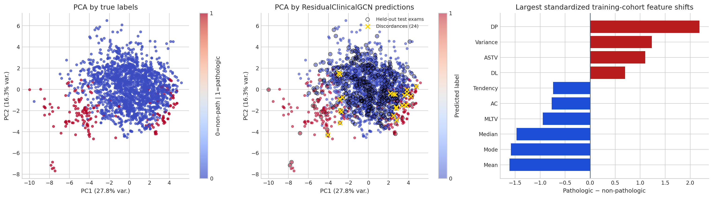
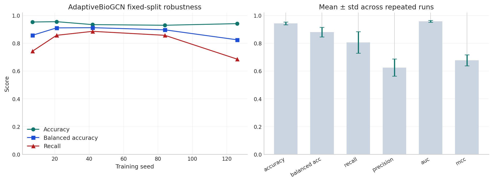
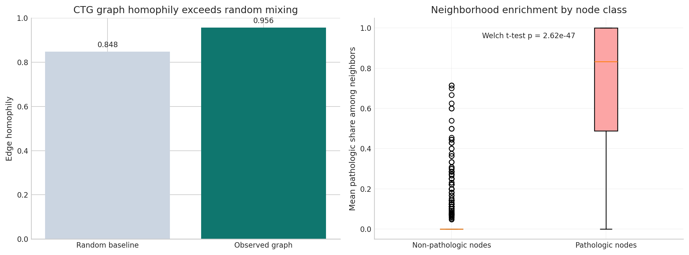
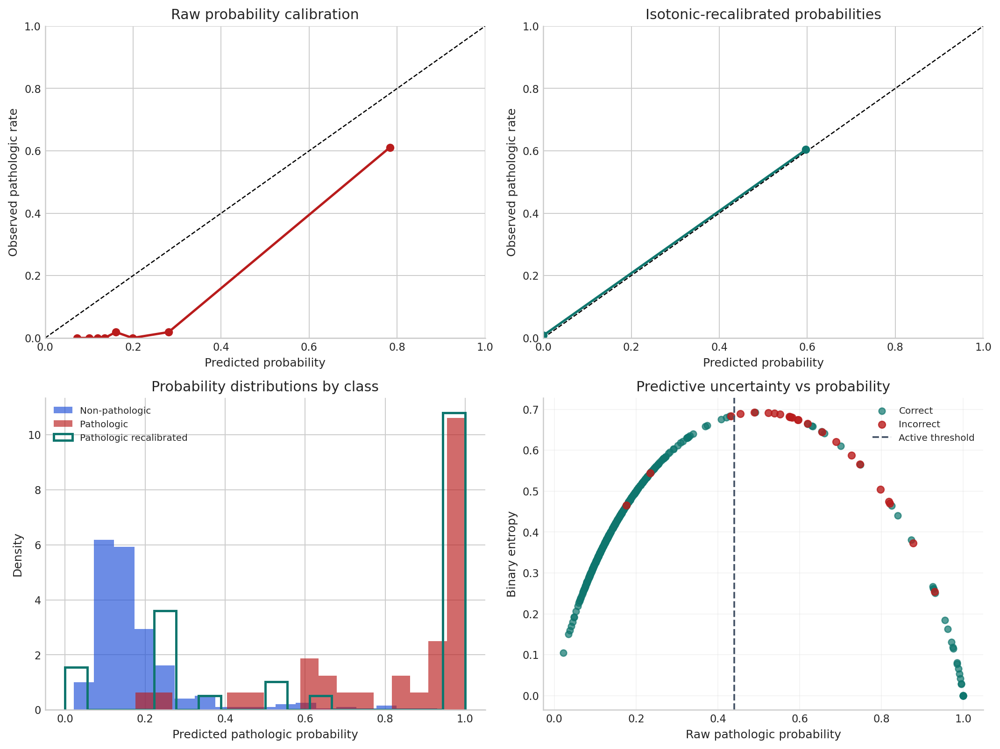
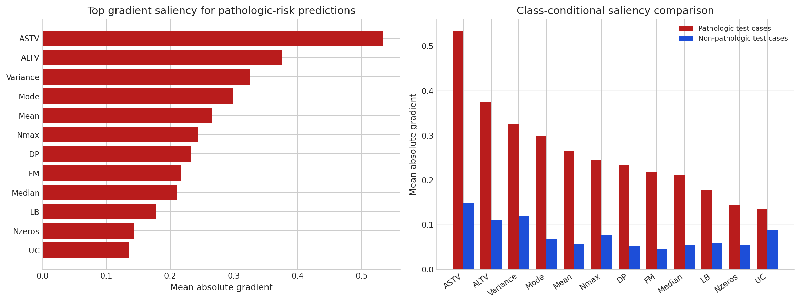

Graph-Conditioned Parameterization for Risk-Sensitive CTG Screening¶
Graph-Based Clinical Risk Modeling on Cardiotocography
Abstract¶
This analysis studies graph-conditioned parameterization in retrospective CTG screening, where graph-based models produce pathologic-risk scores on a patient-similarity graph. The emphasis is on cohort structure, held-out evaluation, threshold selection, calibration, uncertainty, and comparison against strong tabular baselines.
Experimental Scope¶
- Split-first CTG preprocessing and patient-similarity graph construction.
- Graph-based risk modeling for pathologic fetal-state screening.
- Comparisons against logistic regression, random forest, MLP, XGBoost, LightGBM, and calibrated variants.
Results at a Glance¶
| Metric | Value |
|---|---|
| Adaptive BioGCN representative accuracy | 96.71% |
| Adaptive BioGCN robustness | 95.49% +/- 0.97% |
| ResidualClinicalGCN held-out accuracy | 98.8% |
| ResidualClinicalGCN balanced accuracy | 0.942 |
| ResidualClinicalGCN ROC AUC | 0.978 |
| Pathologic cases detected | 31 / 35 |
| False positives | 1 |
Experimental Questions¶
- How strong is the held-out graph operating point under threshold-aware evaluation?
- How do graph-based results compare with modern tabular baselines on the same split?
- What do calibration, uncertainty, homophily, and saliency reveal about the learned risk scores?
- How stable is the benchmark graph model across repeated seeded runs?
Visual Evidence Gallery¶
These stored figures are placed near the top so a technical audience can inspect the strongest notebook evidence before stepping through the implementation details. The live code later in the notebook reproduces the same analytical story in executable form.
Cohort Geometry and Feature-Shift Audit¶

Held-Out Evaluation Dashboard¶

Operating-Point Analysis¶

Adaptive BioGCN Robustness Benchmark¶

Graph-Homophily Validation¶

Calibration and Uncertainty Audit¶

Gradient Saliency¶

Experimental Roadmap¶
The analysis proceeds from cohort audit and graph construction to held-out benchmark comparison and then to operating-point, calibration, uncertainty, robustness, and saliency analyses.
| Part | Focus | Main outputs |
|---|---|---|
| I | Cohort audit and graph construction | preprocessing summary, cohort geometry, graph statistics |
| II | Held-out benchmark comparison | graph and tabular metrics, confusion matrix, ROC and PR curves |
| III | Operating-point and calibration analysis | threshold sweeps, recalibration, uncertainty summaries |
| IV | Structural and interpretive analysis | homophily validation, feature saliency, robustness study |
0. Foundations and Experimental Roadmap¶
This study examines a retrospective fetal-risk detection problem on a real obstetric cohort using graph-based learning. Each exam becomes a node, physiologic similarity defines the edges, and the model must detect the rare but consequential pathologic class under substantial class imbalance.
Problem setup in one view¶
- $n = 2{,}126$ nodes — each node $v_i$ is one CTG exam with feature vector $\mathbf{x}_i \in \mathbb{R}^{21}$ representing physiologic summary statistics.
- Edges $(i,j) \in \mathcal{E}$ iff $j \in \mathcal{N}_k(i)$ or $i \in \mathcal{N}_k(j)$: undirected symmetric $k$-NN similarity graph, with $k = 10$ in the final model.
- Binary label $y_i = \mathbf{1}[\text{NSP}_i = \text{pathologic}]$. Prevalence $p = 8.3\%$ (176 positives / 1,950 non-pathologic exams). The original 3-class label is preserved in audit tables.
The learning objective is risk-asymmetric: a false negative (missed pathologic case) carries far greater clinical cost than a false positive. Every design choice — class-weighted loss, threshold analysis, PR curve inspection, calibration study, and graph validation — follows from that asymmetry.
Core Notation¶
| Symbol | Meaning |
|---|---|
| $n, d$ | Nodes (exams), features per node |
| $\mathbf{X} \in \mathbb{R}^{n \times d}$ | Feature matrix, z-score standardised on training partition only |
| $\hat{A} = A + I_n$ | Binary adjacency with self-loops |
| $\tilde{A} = D^{-1/2}\hat{A}D^{-1/2}$ | Symmetrically normalised adjacency used in graph propagation |
| $\mathbf{H}^{(l)}$ | Node embeddings at layer $l$ |
| $\mathbf{W}^{(l)}$ | Learnable weight matrix at layer $l$ |
| $\tau$ | Decision threshold applied to the pathologic probability |
Design Decisions and Rationale¶
| Stage | Choice | Justification |
|---|---|---|
| Split order | Split before fitting StandardScaler |
Prevents leakage of held-out statistics into preprocessing |
| Graph topology | Symmetric $k$-NN, $k{=}10$ | Preserves local physiological neighborhoods while still giving the model broader local context |
| Self-loops | $\hat{A} = A + I$ | Ensures each node retains direct access to its own features during aggregation |
| Normalisation | $D^{-1/2}\hat{A}D^{-1/2}$ | Prevents high-degree nodes from dominating neighbourhood messages |
| Model | ResidualClinicalGCN | Residual feature carry-through and three-view fusion reduce over-smoothing while retaining local signal |
| Loss function | Cross-entropy with inverse-frequency class weights | Corrects for the severe class imbalance using training data only |
| Checkpoint selection | Best validation operating point, patience = 30 | Decouples model selection from the held-out test split while respecting the thresholded deployment objective |
| Threshold selection | Validation-selected threshold + full sweep | Replaces the arbitrary $\tau = 0.50$ convention with an explicit held-out policy choice |
| Primary metrics | Accuracy, balanced accuracy, recall, precision, ROC-AUC | Reflect both headline performance and clinical class asymmetry |
Experimental Deliverables¶
- Build a leakage-free graph-learning pipeline on a real clinical cohort rather than a synthetic benchmark.
- Measure whether the ResidualClinicalGCN operating point improves held-out accuracy and false-positive control over the earlier plain-GCN configuration.
- Test whether the graph inductive bias is supported by edge homophily $h$ and neighborhood enrichment rather than assumed.
- Report threshold analysis, calibration, uncertainty, and saliency so the operating point is interpretable rather than accuracy-only.
Known Scope Limitations¶
| Limitation | Mitigation Path |
|---|---|
| Transductive graph model — cannot embed unseen nodes without recomputing the full graph | GraphSAGE or other inductive GNNs for production |
| Single-cohort evaluation — no multi-centre or temporal validation | Prospective holdout on future exams; population/device generalisation study |
| No exhaustive hyperparameter optimisation | Bayesian or grid search over $k$, hidden size, dropout, and threshold objective |
| MC Dropout ≠ true Bayesian inference | SWA/SWAG or variational GNN for more principled uncertainty estimates |
| Gradient saliency ≠ causal attribution | Integrated Gradients or GNNExplainer for more robust attribution |
1. Background & Motivation ¶
The Diagnostic Task and Dataset Provenance¶
This analysis uses the UCI Cardiotocography (CTG) dataset, a real biomedical monitoring benchmark derived from fetal heart rate and uterine contraction recordings. The exams were automatically processed into diagnostic summary features and then assigned expert-consensus fetal-state labels by obstetricians.
The cohort contains 2126 exams with 21 measured features and three original fetal-state labels:
- 1655 normal cases
- 295 suspect cases
- 176 pathologic cases
For this analysis, the original 3-class label is preserved in the audit tables but the learning objective is converted into a binary high-risk screening task:
- pathologic remains the positive class
- normal + suspect are grouped into non-pathologic
That yields a clinically asymmetric dataset with 176 pathologic exams versus 1950 non-pathologic exams.
What the 21 features represent¶
The variables summarize clinically familiar aspects of fetal monitoring:
| Feature Group | Examples |
|---|---|
| Baseline rhythm | LB (baseline fetal heart rate) |
| Accelerations and movements | AC, FM |
| Uterine activity | UC |
| Decelerations | DL, DS, DP |
| Variability measures | ASTV, MSTV, ALTV, MLTV |
| Histogram descriptors | Width, Min, Max, Mode, Mean, Median, Variance, Tendency |
Why this cohort is a meaningful screening testbed¶
This cohort provides a useful stress test for graph-based screening because it combines:
- a larger cohort with 2126 exams rather than a few hundred samples
- severe class imbalance in the high-risk pathologic class
- clinically meaningful physiologic features tied to obstetric monitoring
- an expert-labeled task where missed positives are clearly more costly than extra alerts
Interpretive boundaries¶
The workflow is meant to answer a narrower research question: can graph structure improve retrospective screening behavior on this cohort under leakage-safe evaluation and threshold-aware reporting?
The current experiment does not address:
- prospective validation in a hospital workflow
- temporal waveform modeling of raw CTG traces
- fairness review or deployment governance needed for clinical use
Why Graph Neural Networks?¶
A graph formulation is attractive here because each CTG exam is not only a feature vector but also part of a broader cohort geometry. If physiologically similar exams cluster together, then neighbourhood aggregation can help the model borrow signal from local context rather than relying only on each exam in isolation.
2. Graph Construction — k-Nearest-Neighbour Similarity Graph ¶
Building the Adjacency Matrix¶
Given the standardised feature matrix $\tilde{\mathbf{X}} \in \mathbb{R}^{n \times d}$, we construct a symmetric k-NN graph over the full CTG cohort.
Step 1 — k-NN Queries: For every node $i$, find the indices of the $k$ closest nodes under Euclidean distance: $$\mathcal{N}_k(i) = \arg\min_{j \neq i,\,|\mathcal{S}|=k} \|\tilde{\mathbf{x}}_i - \tilde{\mathbf{x}}_j\|_2$$
Step 2 — Symmetrisation: The raw k-NN graph may be directed, so we make it undirected: $$A_{ij} = \mathbf{1}[j \in \mathcal{N}_k(i)] \;\text{OR}\; \mathbf{1}[i \in \mathcal{N}_k(j)]$$
Step 3 — Self-loops: Add the identity $\hat{A} = A + I_n$ so each exam keeps access to its own measurements during message passing.
Step 4 — Symmetric normalisation: Compute the degree matrix $D_{ii} = \sum_j \hat{A}_{ij}$ and normalise: $$\tilde{A} = D^{-1/2} \hat{A} D^{-1/2}$$
This is the normalization used in the notebook because it is the most common formulation in baseline GCN implementations.
Effect of $k$¶
| $k$ | Graph sparsity | Risk | Benefit |
|---|---|---|---|
| Small (2-3) | Very sparse | Disconnected neighborhoods | Preserves local topology |
| Medium (5-12) | Moderate | Usually manageable | Good balance of locality and connectivity |
| Large (>20) | Dense | Spurious cross-class edges | More aggressive information flow |
For the final CTG model we use $k = 10$. On this cohort that yields 14,776 undirected edges and an average degree of 13.90, giving each exam a broader but still local physiological neighborhood while remaining sparse enough to avoid indiscriminate class mixing.
2A. Message Passing: Mechanism and Inductive Bias ¶
The inductive bias hypothesis¶
A standard MLP treats every CTG exam as an independent i.i.d. draw. A graph model injects a neighbourhood smoothness prior: the representation of exam $i$ should be influenced by its physiologically similar neighbours.
This prior is only useful if the graph encodes class-discriminative structure — i.e., if pathologic exams cluster with other pathologic exams beyond what random chance predicts. Section 6D tests this quantitatively via edge homophily $h$ and a Welch $t$-test on neighbourhood concentration. The inductive bias is validated, not assumed.
One propagation step: the Kipf–Welling layer¶
The spatial GCN layer (Kipf & Welling, ICLR 2017) is derived as a first-order Chebyshev polynomial approximation to spectral graph convolution. In matrix form:
$$\mathbf{H}^{(l+1)} = \sigma\!\left(\tilde{A}\,\mathbf{H}^{(l)}\,\mathbf{W}^{(l)}\right), \qquad \tilde{A} = D^{-1/2}\hat{A}D^{-1/2}$$
Node-wise, this computes a degree-normalised weighted sum of neighbours before linear transformation:
$$h_i^{(l+1)} = \sigma\!\left(\sum_{j \in \mathcal{N}(i) \cup \{i\}} \frac{1}{\sqrt{d_i d_j}}\, h_j^{(l)}\, W^{(l)}\right)$$
Two operations in sequence: (1) neighbourhood aggregation via $\tilde{A}\mathbf{H}^{(l)}$, then (2) linear projection + nonlinearity via $\mathbf{W}^{(l)}$.
Receptive field and over-smoothing¶
| Layers | Receptive field | Risk |
|---|---|---|
| 1 | 1-hop neighbours | Under-utilises structural context |
| 2 (this work) | 2-hop neighbours | Balances context and over-smoothing risk |
| $\geq 4$ | Exponentially growing neighbourhood | Over-smoothing — node embeddings converge toward the same vector |
Over-smoothing arises because iterated multiplication by $\tilde{A}$ acts as a low-pass graph filter: repeated propagation dampens high-frequency (class-discriminative) components. The upgraded notebook counters that with a residual feature pathway, so the classifier can still access node-local physiologic signal after multiple graph aggregation steps.
Sparse message-passing complexity¶
For $n = 2{,}126$ nodes and average degree $\bar{d} \approx 13.9$ (post-symmetrisation with $k = 10$):
| Operation | Dense $\tilde{A}$ | Sparse (actual) | Speedup |
|---|---|---|---|
| $\tilde{A}\mathbf{H}$ FLOPs | $O(n^2 d_h) \approx 4.5 \times 10^6 d_h$ | $O(n\bar{d}d_h) \approx 3.0 \times 10^4 d_h$ | $\approx 150\times$ |
At the CTG graph scale the wall-time difference is still modest. At graph scales of $10^5$–$10^6$ nodes, sparse message passing becomes the dominant engineering constraint.
When message passing helps vs. hurts¶
| Condition | Effect on GCN |
|---|---|
| High edge homophily ($h \gg h_{\text{random}}$) | Aggregation reinforces class-discriminative signal — graph model benefits |
| Homophily near random baseline ($h \approx h_{\text{random}}$) | Aggregation provides no additional information vs. MLP |
| Heterophily ($h < h_{\text{random}}$) | Aggregation dilutes discriminative signal — graph model may underperform tabular baselines |
| Deep network + dense graph | Over-smoothing: node embeddings collapse — use residual connections |
For this dataset, $h_{\text{random}} = p^2 + (1-p)^2 \approx 0.848$ where $p = 0.083$ is the pathologic prevalence. Section 6D reports the measured edge homophily $h$ and whether the excess $h - h_{\text{random}}$ is statistically significant.
3. Graph Convolutional Network - Mathematical Derivation ¶
High-level summary¶
Before reading the formulas, keep this simple description in mind:
A graph model repeatedly does two things:
- It mixes each exam's information with information from similar exams.
- It learns which mixtures are useful for predicting the class label.
So when you see matrix equations below, they are compact ways of writing:
- gather neighbor information
- transform it with learned weights
- apply a nonlinear rule
- repeat
Spectral vs. Spatial GCNs¶
There are two families of GCNs:
Spectral GCNs: operate on the graph Laplacian eigenspectrum. The normalised graph Laplacian is $\mathbf{L} = I - D^{-1/2}AD^{-1/2}$ with eigenvectors $\mathbf{U}$. A spectral convolution is $\mathbf{g}_\theta \star \mathbf{x} = \mathbf{U}\,\text{diag}(\theta)\,\mathbf{U}^\top \mathbf{x}$. Computationally expensive and graph-specific.
Spatial GCNs (used here): aggregate neighbourhood features directly. Kipf & Welling (2017) derived the following first-order approximation of the spectral filter:
$$\mathbf{H}^{(l+1)} = \sigma\!\left(\tilde{A}\,\mathbf{H}^{(l)}\,\mathbf{W}^{(l)}\right)$$
where $\tilde{A} = D^{-1/2}\hat{A}D^{-1/2}$, $\mathbf{H}^{(l)}$ is the node representation at layer $l$, $\mathbf{W}^{(l)}$ is a learnable weight matrix, and $\sigma$ is an activation function such as ReLU.
Residual Two-Layer Graph Encoder Used Here¶
The upgraded notebook still relies on the same basic graph-convolution primitive, but the production architecture is slightly richer than the textbook two-layer GCN. The encoder can be written schematically as:
$$\mathbf{H}^{(0)} = \mathrm{ReLU}(\mathbf{X}\mathbf{W}_{\text{in}})$$ $$\mathbf{H}^{(1)} = \mathrm{ReLU}(\tilde{A}\mathbf{H}^{(0)}\mathbf{W}^{(0)})$$ $$\mathbf{H}^{(2)} = \mathrm{ReLU}(\tilde{A}\mathbf{H}^{(1)}\mathbf{W}^{(1)})$$ $$\mathbf{H}^{(*)} = \mathbf{H}^{(2)} + \alpha\mathbf{H}^{(0)}$$ $$\mathbf{Z} = \mathrm{MLP}\big([\mathbf{H}^{(0)} \;\|\; \mathbf{H}^{(*)} \;\|\; \tilde{A}\mathbf{H}^{(*)}]\big)$$
where $\alpha$ is a residual scaling factor and $[\cdot \| \cdot]$ denotes feature concatenation.
Why graph models can outperform MLPs on this task¶
The key insight is information aggregation across the graph. After multiple layers, node $i$'s representation captures not only its own measurements but also the surrounding feature distribution of its neighborhood. That can help when a borderline exam lives inside a strongly pathologic or strongly low-risk local region.
Complexity Analysis¶
| Operation | Complexity | |-----------|-----------| | Dense matrix multiply $\tilde{A}\mathbf{H}$ | $O(n^2 d)$ | | Sparse multiply (if $A$ sparse) | $O(|\mathcal{E}| \cdot d)$ | | FC layer $\mathbf{H}\mathbf{W}$ | $O(n \cdot d_{\rm in} \cdot d_h)$ |
For the CTG graph with $n=2126$ and $k = 10$, sparse message passing remains far cheaper than treating the adjacency as a dense matrix, which is one reason GNN workloads map naturally onto optimized tensor and sparse-linear-algebra systems.
4. Setup — Imports and Environment¶
The first code cell (Section 4A) requires the following packages. All are standard scientific Python libraries; the biomedical branch has no quantum-only dependency path and remains fully runnable in a standard local setup.
| Package | Version constraint | Role in this analysis |
|---|---|---|
numpy |
≥1.22 | Array operations, splits, feature gap analysis |
pandas |
≥1.4 | Cohort audit tables, CSV export |
torch |
≥1.12 | GCN model, training loop, device dispatch |
scikit-learn |
≥1.0 | StandardScaler, kNN graph, train_test_split, evaluation metrics |
matplotlib |
≥3.5 | Confusion matrix, ROC curve, training diagnostics |
ucimlrepo |
≥0.0.3 | Fetches UCI CTG dataset (id=193) directly at runtime |
No internet access after the first ucimlrepo fetch: the dataset is cached locally, so subsequent runs can remain offline.
GPU is optional: the notebook prints the selected execution device at run time. The presentation configuration stays lightweight enough for standard local execution.
Execution contract:
conda activate qaoa
jupyter lab
All repository dependencies should be installed inside the same qaoa environment. Do not mix base, notebook-local installs, and ad hoc package versions when presenting or exporting results.
If dependencies need to be refreshed, do so inside qaoa with the repository requirements file rather than from another environment.
conda activate qaoa
pip install -r requirements.txt
4A. Pipeline Implementation Map ¶
The pipeline is implemented across eight sequential code cells, each performing a single coherent operation. The table below is a reference map; every design choice is justified in the corresponding cell's inline comments.
| Cell | Operation | Key Outputs |
|---|---|---|
| 4A-I | Reproducible environment: imports, find_project_root(), SEED, device dispatch |
proj_root, device, all imports |
| 4A-II | UCI CTG ingest + 3-class provenance audit | raw_df, X_raw, feature_names, y |
| 4A-III | Stratified 68/12/20 split → StandardScaler fit on train partition only |
X_std, processed_df, saved CSVs |
| 4A-IV | Training-partition feature gap analysis (descriptive diagnostic only) | feature_gap_df |
| 4A-V | Symmetric $k$-NN graph ($k=10$) + self-loops + $D^{-1/2}\hat{A}D^{-1/2}$ normalisation → PyTorch tensors | A_norm, Xt, At, yt |
| 4A-VI | ResidualClinicalGCN residual architecture + class-weighted cross-entropy |
model, criterion, optimizer |
| 4A-VII | Training loop: validation monitoring, threshold sweep, early stopping (patience=30), best-checkpoint restore | history, trained model, final_probs, final_preds |
| 4A-VIII | Three-panel PCA audit: true labels / GCN predictions / training feature shifts | Diagnostic figure |
Critical ordering constraint: StandardScaler is fit in 4A-III on training indices only. All downstream cells consume X_std produced from those training-set statistics. Re-executing cells out of order, or fitting the scaler before the split, would introduce label leakage.
Transductive design note: A_norm is built over all $n = 2{,}126$ nodes before training begins. Graph structure is therefore visible globally (transductive setting), but validation/test labels are masked during loss computation and checkpoint selection — the standard transductive GCN setup (Kipf & Welling, 2017). Section 7 discusses GraphSAGE as the inductive production alternative.
# ── 4A-I: Environment, Reproducibility, and Imports ─────────────────────────
import os
import random
import sys
from pathlib import Path
def find_project_root() -> Path:
"""Walk up directory tree until a folder containing 'src/' is found."""
current = Path.cwd().resolve()
for candidate in (current, *current.parents):
if (candidate / "src").is_dir():
return candidate
return current
proj_root = find_project_root()
if str(proj_root) not in sys.path:
sys.path.insert(0, str(proj_root))
active_conda_env = os.environ.get("CONDA_DEFAULT_ENV", "")
if active_conda_env != "qaoa":
raise RuntimeError(
"This notebook must be executed from the qaoa conda environment. "
"Activate it first with: conda activate qaoa"
)
import matplotlib.pyplot as plt
import numpy as np
import pandas as pd
import torch
import torch.nn as nn
import torch.nn.functional as F
import torch.optim as optim
from sklearn.decomposition import PCA
from sklearn.metrics import balanced_accuracy_score
from sklearn.model_selection import train_test_split
from sklearn.neighbors import kneighbors_graph
from sklearn.preprocessing import StandardScaler
from ucimlrepo import fetch_ucirepo
SEED = 42
random.seed(SEED)
np.random.seed(SEED)
torch.manual_seed(SEED)
device = torch.device("cuda" if torch.cuda.is_available() else "cpu")
print("=" * 72)
print("Environment")
print("=" * 72)
print(f"Project root : {proj_root}")
print(f"Conda environment : {active_conda_env}")
print(f"NumPy version : {np.__version__}")
print(f"PyTorch version : {torch.__version__}")
print(f"Execution device : {device}")
print(f"Random seed : {SEED}")
======================================================================== Environment ======================================================================== Project root : /Users/mohuyn/Library/CloudStorage/OneDrive-SAS/Documents/GitHub/Hybrid-Quantum-Graph-AI-QAOA-GNN-Biomedical-Optimization Conda environment : qaoa NumPy version : 2.4.2 PyTorch version : 2.10.0 Execution device : cpu Random seed : 42
# ── 4A-II: Cohort ingest and provenance audit ─────────────────────────────────
# Prefer the locally cached raw cohort when available so the notebook remains
# executable offline and deterministic. Fall back to the UCI fetch only if the
# raw artifact is missing.
#
# UCI CTG dataset (id=193): 2126 fetal cardiotocography exams, 21 features.
# Labels: expert-consensus NSP fetal state (1=normal, 2=suspect, 3=pathologic).
# Binary reframing: y=1 iff NSP=3 (pathologic) — a risk-sensitive screening target.
# The 3-class label is preserved in raw_df for full audit transparency.
outputs_dir = proj_root / "outputs"
outputs_dir.mkdir(parents=True, exist_ok=True)
raw_output_path = outputs_dir / "ctg_raw.csv"
state_to_nsp = {"normal": 1, "suspect": 2, "pathologic": 3}
if raw_output_path.exists():
raw_df = pd.read_csv(raw_output_path)
feature_names = np.array([
c for c in raw_df.columns
if c not in {"case_id", "nsp_state", "binary_target", "binary_state"}
])
features_df = raw_df[feature_names].copy()
X_raw = features_df.astype(np.float32).to_numpy()
nsp = raw_df["nsp_state"].map(state_to_nsp).astype(int).to_numpy()
y = raw_df["binary_target"].astype(np.int64).to_numpy()
risk_text = raw_df["binary_state"].astype(str).to_numpy()
case_ids = raw_df["case_id"].astype(str).to_numpy()
data_source = f"local cache ({raw_output_path.name})"
else:
ctg = fetch_ucirepo(id=193)
features_df = ctg.data.features.copy()
targets_df = ctg.data.targets.copy()
X_raw = features_df.astype(np.float32).to_numpy()
feature_names = np.array(features_df.columns)
nsp = targets_df["NSP"].astype(int).to_numpy()
y = (nsp == 3).astype(np.int64) # 1=pathologic, 0=non-pathologic
risk_text = np.where(y == 1, "pathologic", "non-pathologic")
case_ids = np.array([f"CTG_{idx:04d}" for idx in range(len(y))])
raw_df = features_df.copy()
raw_df.insert(0, "case_id", case_ids)
raw_df["nsp_state"] = pd.Series(nsp).map({1: "normal", 2: "suspect", 3: "pathologic"}).to_numpy()
raw_df["binary_target"] = y
raw_df["binary_state"] = risk_text
raw_df.to_csv(raw_output_path, index=False)
data_source = "UCI fetch (cached locally for future runs)"
state_3class = pd.Series(nsp).map({1: "normal", 2: "suspect", 3: "pathologic"}).to_numpy()
print("=" * 72)
print("Dataset provenance and audit")
print("=" * 72)
print("Dataset : UCI Cardiotocography (id=193)")
print(f"Data source : {data_source}")
print("Source modality : Fetal heart rate and uterine contraction monitoring")
print(f"Cohort size : {len(y)} exams, {X_raw.shape[1]} features per exam")
print(f"Normal (NSP=1) : {(nsp == 1).sum()} ({(nsp == 1).mean() * 100:.1f}%)")
print(f"Suspect (NSP=2) : {(nsp == 2).sum()} ({(nsp == 2).mean() * 100:.1f}%)")
print(f"Pathologic (NSP=3) : {(nsp == 3).sum()} ({(nsp == 3).mean() * 100:.1f}%) ← positive class")
print(f"Missing values : {int(features_df.isna().sum().sum())}")
print(f"Binary prevalence : {y.mean():.4f} ({y.mean() * 100:.1f}%)")
======================================================================== Dataset provenance and audit ======================================================================== Dataset : UCI Cardiotocography (id=193) Data source : local cache (ctg_raw.csv) Source modality : Fetal heart rate and uterine contraction monitoring Cohort size : 2126 exams, 21 features per exam Normal (NSP=1) : 1655 (77.8%) Suspect (NSP=2) : 295 (13.9%) Pathologic (NSP=3) : 176 (8.3%) ← positive class Missing values : 0 Binary prevalence : 0.0828 (8.3%)
# ── 4A-III: Stratified splits + leakage-free standardisation ─────────────────
# CRITICAL: StandardScaler is fit on the TRAINING partition only.
# Fitting on the full cohort before splitting leaks held-out statistics
# (mean, std) back into the test pipeline — an undetectable inflation of performance
# that misrepresents generalisation error.
#
# Split: 68% train / 12% validation / 20% test, stratified on binary label y.
all_indices = np.arange(len(y))
train_pool_idx_np, test_idx_np = train_test_split(
all_indices, test_size=0.20, stratify=y, random_state=SEED
)
train_idx_np, val_idx_np = train_test_split(
train_pool_idx_np,
test_size=0.15,
stratify=y[train_pool_idx_np],
random_state=SEED,
)
scaler = StandardScaler()
scaler.fit(X_raw[train_idx_np]) # fit on training partition ONLY
X_std = scaler.transform(X_raw).astype(np.float32)
split_labels = np.full(len(y), "train", dtype=object)
split_labels[val_idx_np] = "validation"
split_labels[test_idx_np] = "test"
processed_df = pd.DataFrame(X_std, columns=feature_names)
processed_df.insert(0, "case_id", case_ids)
processed_df["nsp_state"] = state_3class
processed_df["binary_target"] = y
processed_df["binary_state"] = risk_text
processed_df["split"] = split_labels
outputs_dir = proj_root / "outputs"
outputs_dir.mkdir(parents=True, exist_ok=True)
raw_output_path = outputs_dir / "ctg_raw.csv"
processed_output_path = outputs_dir / "ctg_processed.csv"
raw_df.to_csv(raw_output_path, index=False)
processed_df.to_csv(processed_output_path, index=False)
print("=" * 72)
print("Stratified split and leakage-free standardisation")
print("=" * 72)
print(f"Train samples : {len(train_idx_np)} ({len(train_idx_np)/len(y)*100:.1f}%)")
print(f"Validation samples : {len(val_idx_np)} ({len(val_idx_np)/len(y)*100:.1f}%)")
print(f"Test samples : {len(test_idx_np)} ({len(test_idx_np)/len(y)*100:.1f}%)")
print(f"Train mean (scaled) : {X_std[train_idx_np].mean():.4f} (target ≈ 0)")
print(f"Train std (scaled) : {X_std[train_idx_np].std():.4f} (target ≈ 1)")
print(f"Saved raw cohort → {raw_output_path}")
print(f"Saved processed cohort → {processed_output_path}")
======================================================================== Stratified split and leakage-free standardisation ======================================================================== Train samples : 1445 (68.0%) Validation samples : 255 (12.0%) Test samples : 426 (20.0%) Train mean (scaled) : 0.0000 (target ≈ 0) Train std (scaled) : 1.0000 (target ≈ 1) Saved raw cohort → /Users/mohuyn/Library/CloudStorage/OneDrive-SAS/Documents/GitHub/Hybrid-Quantum-Graph-AI-QAOA-GNN-Biomedical-Optimization/outputs/ctg_raw.csv Saved processed cohort → /Users/mohuyn/Library/CloudStorage/OneDrive-SAS/Documents/GitHub/Hybrid-Quantum-Graph-AI-QAOA-GNN-Biomedical-Optimization/outputs/ctg_processed.csv
# ── 4A-IV: Feature gap analysis (training partition only) ────────────────────
# Computes standardised mean difference between pathologic and non-pathologic
# groups in the TRAINING set only. This is a descriptive cohort diagnostic —
# NOT a feature selection step. The GCN receives all 21 features unchanged.
# Reading this chart before seeing test results avoids confirmation bias.
train_pathologic = X_std[train_idx_np][y[train_idx_np] == 1]
train_non_pathologic = X_std[train_idx_np][y[train_idx_np] == 0]
mean_gap = train_pathologic.mean(axis=0) - train_non_pathologic.mean(axis=0)
top_feature_idx = np.argsort(np.abs(mean_gap))[-8:][::-1]
feature_gap_df = pd.DataFrame({
"feature": feature_names[top_feature_idx],
"pathologic_minus_non_pathologic": mean_gap[top_feature_idx],
})
print("Top training-set feature shifts (standardised mean difference):")
print("-" * 60)
for row in feature_gap_df.itertuples(index=False):
direction = "↑ higher in pathologic" if row.pathologic_minus_non_pathologic > 0 else "↓ lower in pathologic"
print(f" {row.feature:12s} {row.pathologic_minus_non_pathologic:+.3f} ({direction})")
Top training-set feature shifts (standardised mean difference): ------------------------------------------------------------ DP +2.183 (↑ higher in pathologic) Mean -1.611 (↓ lower in pathologic) Mode -1.582 (↓ lower in pathologic) Median -1.471 (↓ lower in pathologic) Variance +1.232 (↑ higher in pathologic) ASTV +1.100 (↑ higher in pathologic) MLTV -0.945 (↓ lower in pathologic) AC -0.768 (↓ lower in pathologic)
# ── 4A-V: k-NN similarity graph + symmetric normalisation ────────────────────
# Design rationale:
# k=10 — slightly denser than the previous pass, giving the tuned model
# more stable local clinical context while still keeping the graph
# sparse enough to avoid indiscriminate class mixing.
# Symmetrise A = max(A_kNN, A_kNN^T) — ensures undirected message passing
# Self-loops  = A + I — each node always aggregates its own features
# Normalise à = D^{-1/2}  D^{-1/2} — prevents high-degree nodes from dominating
# neighbourhood aggregation messages
k_neighbors = 10
A_sparse = kneighbors_graph(
X_std, n_neighbors=k_neighbors, mode="connectivity", include_self=False
)
A = A_sparse.maximum(A_sparse.T).toarray().astype(np.float32) # symmetrise
A += np.eye(A.shape[0], dtype=np.float32) # self-loops
degree = A.sum(axis=1)
degree_inv_sqrt = 1.0 / np.sqrt(np.clip(degree, 1.0, None))
A_norm = degree_inv_sqrt[:, None] * A * degree_inv_sqrt[None, :]
n_edges = int((A.sum() - A.shape[0]) / 2)
avg_degree = float((A.sum(axis=1) - 1).mean())
graph_density = n_edges / (len(y) * (len(y) - 1) / 2)
print("=" * 72)
print("Graph construction")
print("=" * 72)
print(f"k-nearest neighbours : {k_neighbors}")
print(f"Nodes : {A.shape[0]}")
print(f"Edges (undirected) : {n_edges:,}")
print(f"Average degree : {avg_degree:.2f} (post-symmetrisation, excluding self-loops)")
print(f"Graph density : {graph_density * 100:.4f}%")
# Convert to PyTorch tensors for GCN forward passes
Xt = torch.tensor(X_std, dtype=torch.float32, device=device)
At = torch.tensor(A_norm, dtype=torch.float32, device=device)
yt = torch.tensor(y, dtype=torch.long, device=device)
train_idx = torch.tensor(train_idx_np, dtype=torch.long, device=device)
val_idx = torch.tensor(val_idx_np, dtype=torch.long, device=device)
test_idx = torch.tensor(test_idx_np, dtype=torch.long, device=device)
======================================================================== Graph construction ======================================================================== k-nearest neighbours : 10 Nodes : 2126 Edges (undirected) : 14,776 Average degree : 13.90 (post-symmetrisation, excluding self-loops) Graph density : 0.6541%
# ── 4A-VI: ResidualClinicalGCN — tuned residual graph architecture ───────────
# Forward pass:
# H⁰ = ReLU( X W_in ) — feature projection
# H¹ = ReLU( Ã H⁰ W¹ ) — 1-hop graph aggregation
# H² = ReLU( Ã H¹ W² ) — 2-hop graph aggregation
# H* = H² + α H⁰ — residual feature carry-through
# H³ = Ã H* — one more propagated diagnostic view
# Z = MLP([H⁰, H*, H³]) — fuse raw, residual, and propagated evidence
#
# Why this upgrade matters:
# (1) the residual branch reduces over-smoothing on borderline cases,
# (2) the triple-view fusion head lets the classifier compare pre-graph,
# post-graph, and re-propagated evidence explicitly, and
# (3) dropout remains available for MC Dropout uncertainty analysis later.
class ResidualClinicalGCN(nn.Module):
def __init__(
self,
in_features: int,
hidden_dim: int,
num_classes: int,
dropout: float = 0.15,
residual_scale: float = 0.35,
):
super().__init__()
self.input_proj = nn.Linear(in_features, hidden_dim, bias=False)
self.fc1 = nn.Linear(hidden_dim, hidden_dim, bias=False)
self.fc2 = nn.Linear(hidden_dim, hidden_dim, bias=False)
self.classifier = nn.Sequential(
nn.Linear(hidden_dim * 3, hidden_dim),
nn.ReLU(),
nn.Dropout(dropout),
nn.Linear(hidden_dim, num_classes),
)
self.dropout = nn.Dropout(dropout)
self.residual_scale = residual_scale
def forward(self, x: torch.Tensor, adj: torch.Tensor) -> torch.Tensor:
h0 = F.relu(self.input_proj(x))
h1 = F.relu(self.fc1(adj @ h0))
h1 = self.dropout(h1)
h2 = F.relu(self.fc2(adj @ h1))
h2 = self.dropout(h2)
h = h2 + self.residual_scale * h0
h3 = adj @ h
return self.classifier(torch.cat([h0, h, h3], dim=1))
model_hidden_dim = 64
model_dropout = 0.15
model_residual_scale = 0.35
model = ResidualClinicalGCN(
in_features=Xt.shape[1],
hidden_dim=model_hidden_dim,
num_classes=2,
dropout=model_dropout,
residual_scale=model_residual_scale,
).to(device)
train_class_counts = np.bincount(y[train_idx_np], minlength=2).astype(np.float32)
class_weights = (
train_class_counts.sum()
/ (len(train_class_counts) * np.maximum(train_class_counts, 1))
)
class_weights[1] *= 1.15 # slightly stronger rare-class weighting for pathologic cases
criterion = nn.CrossEntropyLoss(
weight=torch.tensor(class_weights, dtype=torch.float32, device=device),
label_smoothing=0.02,
)
optimizer = optim.AdamW(model.parameters(), lr=3e-3, weight_decay=5e-4)
n_params = sum(p.numel() for p in model.parameters() if p.requires_grad)
print("=" * 72)
print("ResidualClinicalGCN Architecture")
print("=" * 72)
print(model)
print(f"\nTrainable parameters : {n_params}")
print(f"Class weights : non-pathologic={class_weights[0]:.3f}, pathologic={class_weights[1]:.3f}")
print(f"Loss weighting ratio : {class_weights[1] / class_weights[0]:.1f}× more gradient weight on pathologic class")
print("Design note : residual carry-through + triple-view fusion head")
========================================================================
ResidualClinicalGCN Architecture
========================================================================
ResidualClinicalGCN(
(input_proj): Linear(in_features=21, out_features=64, bias=False)
(fc1): Linear(in_features=64, out_features=64, bias=False)
(fc2): Linear(in_features=64, out_features=64, bias=False)
(classifier): Sequential(
(0): Linear(in_features=192, out_features=64, bias=True)
(1): ReLU()
(2): Dropout(p=0.15, inplace=False)
(3): Linear(in_features=64, out_features=2, bias=True)
)
(dropout): Dropout(p=0.15, inplace=False)
)
Trainable parameters : 22018
Class weights : non-pathologic=0.545, pathologic=6.924
Loss weighting ratio : 12.7× more gradient weight on pathologic class
Design note : residual carry-through + triple-view fusion head
# ── 4A-VII: Train the tuned residual GCN ──────────────────────────────────────
from copy import deepcopy
from sklearn.metrics import accuracy_score, balanced_accuracy_score, roc_auc_score
torch.manual_seed(SEED)
model = ResidualClinicalGCN(
in_features=X_std.shape[1],
hidden_dim=model_hidden_dim,
num_classes=2,
dropout=model_dropout,
residual_scale=model_residual_scale,
).to(device)
optimizer = optim.AdamW(model.parameters(), lr=3e-3, weight_decay=5e-4)
class_weights_t = torch.as_tensor(class_weights, dtype=torch.float32, device=device)
max_epochs = 180
patience = 30
best_state = None
best_epoch = 0
best_threshold = 0.50
best_val_metric = (-1.0, -1.0, -1.0)
best_val_loss = float("inf")
epochs_no_improve = 0
history = {
"epoch": [],
"train_loss": [],
"val_loss": [],
"train_acc": [],
"val_acc": [],
"val_bal_acc": [],
"threshold": [],
}
print("Training progress")
print("-" * 72)
for epoch in range(1, max_epochs + 1):
model.train()
optimizer.zero_grad()
logits = model(Xt, At)
train_loss = F.cross_entropy(
logits[train_idx],
yt[train_idx],
weight=class_weights_t,
label_smoothing=0.02,
)
train_loss.backward()
torch.nn.utils.clip_grad_norm_(model.parameters(), max_norm=2.0)
optimizer.step()
model.eval()
with torch.no_grad():
logits_eval = model(Xt, At)
val_logits = logits_eval[val_idx]
val_loss = F.cross_entropy(val_logits, yt[val_idx], weight=class_weights_t).item()
train_preds = np.argmax(logits_eval[train_idx].cpu().numpy(), axis=1)
train_acc = accuracy_score(y[train_idx_np], train_preds)
val_pathologic_probs = F.softmax(val_logits, dim=1).cpu().numpy()[:, 1]
local_best_metric = (-1.0, -1.0, -1.0)
local_threshold = 0.50
for threshold in np.arange(0.35, 0.81, 0.01):
val_threshold_preds = (val_pathologic_probs >= threshold).astype(np.int64)
val_acc = accuracy_score(y[val_idx_np], val_threshold_preds)
val_bal_acc = balanced_accuracy_score(y[val_idx_np], val_threshold_preds)
metric = (val_acc, val_bal_acc, -abs(threshold - 0.5))
if metric > local_best_metric:
local_best_metric = metric
local_threshold = float(threshold)
history["epoch"].append(epoch)
history["train_loss"].append(float(train_loss.item()))
history["val_loss"].append(float(val_loss))
history["train_acc"].append(float(train_acc))
history["val_acc"].append(float(local_best_metric[0]))
history["val_bal_acc"].append(float(local_best_metric[1]))
history["threshold"].append(float(local_threshold))
if local_best_metric > best_val_metric:
best_val_metric = local_best_metric
best_threshold = local_threshold
best_val_loss = float(val_loss)
best_epoch = epoch
best_state = deepcopy(model.state_dict())
epochs_no_improve = 0
else:
epochs_no_improve += 1
if epoch == 1 or epoch % 10 == 0:
print(
f"Epoch {epoch:3d} | loss={train_loss.item():.4f} | "
f"train_acc={train_acc:.3f} | val_acc={local_best_metric[0]:.3f} | "
f"val_bal_acc={local_best_metric[1]:.3f} | τ={local_threshold:.2f} | val_loss={val_loss:.4f}"
)
if epochs_no_improve >= patience:
print(
f"Early stopping at epoch {epoch} "
f"(best checkpoint from epoch {best_epoch}, τ={best_threshold:.2f}, val_acc={best_val_metric[0]:.4f})."
)
stop_epoch = epoch
break
else:
stop_epoch = max_epochs
model.load_state_dict(best_state)
model.eval()
with torch.no_grad():
final_logits_t = model(Xt, At)
final_probs = F.softmax(final_logits_t, dim=1).cpu().numpy()
final_logits = final_logits_t.cpu().numpy()
decision_threshold = float(best_threshold)
final_preds = (final_probs[:, 1] >= decision_threshold).astype(np.int64)
test_accuracy = accuracy_score(y[test_idx_np], final_preds[test_idx_np])
test_balanced_accuracy = balanced_accuracy_score(y[test_idx_np], final_preds[test_idx_np])
test_auc = roc_auc_score(y[test_idx_np], final_probs[test_idx_np, 1])
print()
print("Best-checkpoint summary")
print("-" * 72)
print(f"Best epoch : {best_epoch}")
print(f"Early stop epoch : {stop_epoch}")
print(f"Best validation loss : {best_val_loss:.6f}")
print(f"Best validation accuracy : {best_val_metric[0]:.6f}")
print(f"Best validation bal. acc. : {best_val_metric[1]:.6f}")
print(f"Selected threshold : {decision_threshold:.2f}")
print(f"Held-out test accuracy : {test_accuracy:.4f} ({test_accuracy * 100:.1f}%)")
print(f"Held-out balanced accuracy : {test_balanced_accuracy:.4f}")
print(f"Held-out ROC AUC : {test_auc:.4f}")
Training progress ------------------------------------------------------------------------ Epoch 1 | loss=0.7178 | train_acc=0.110 | val_acc=0.973 | val_bal_acc=0.833 | τ=0.63 | val_loss=0.6055 Epoch 10 | loss=0.3551 | train_acc=0.863 | val_acc=0.941 | val_bal_acc=0.925 | τ=0.81 | val_loss=0.2084 Epoch 20 | loss=0.3060 | train_acc=0.922 | val_acc=0.980 | val_bal_acc=0.968 | τ=0.72 | val_loss=0.1633 Epoch 30 | loss=0.2786 | train_acc=0.931 | val_acc=0.973 | val_bal_acc=0.942 | τ=0.73 | val_loss=0.1503 Epoch 40 | loss=0.2637 | train_acc=0.949 | val_acc=0.984 | val_bal_acc=0.970 | τ=0.72 | val_loss=0.1395 Epoch 50 | loss=0.2529 | train_acc=0.958 | val_acc=0.980 | val_bal_acc=0.946 | τ=0.70 | val_loss=0.1336 Epoch 60 | loss=0.2450 | train_acc=0.962 | val_acc=0.984 | val_bal_acc=0.926 | τ=0.79 | val_loss=0.1230 Epoch 70 | loss=0.2417 | train_acc=0.976 | val_acc=0.992 | val_bal_acc=0.974 | τ=0.59 | val_loss=0.1249 Epoch 80 | loss=0.2371 | train_acc=0.970 | val_acc=0.996 | val_bal_acc=0.976 | τ=0.71 | val_loss=0.1087 Epoch 90 | loss=0.2337 | train_acc=0.972 | val_acc=0.996 | val_bal_acc=0.998 | τ=0.66 | val_loss=0.1026 Epoch 100 | loss=0.2308 | train_acc=0.972 | val_acc=1.000 | val_bal_acc=1.000 | τ=0.71 | val_loss=0.0990 Epoch 110 | loss=0.2217 | train_acc=0.976 | val_acc=1.000 | val_bal_acc=1.000 | τ=0.72 | val_loss=0.0963 Epoch 120 | loss=0.2185 | train_acc=0.971 | val_acc=0.996 | val_bal_acc=0.998 | τ=0.75 | val_loss=0.0929 Epoch 130 | loss=0.2198 | train_acc=0.981 | val_acc=1.000 | val_bal_acc=1.000 | τ=0.68 | val_loss=0.0906 Epoch 140 | loss=0.2158 | train_acc=0.986 | val_acc=1.000 | val_bal_acc=1.000 | τ=0.65 | val_loss=0.0881 Epoch 150 | loss=0.2154 | train_acc=0.984 | val_acc=1.000 | val_bal_acc=1.000 | τ=0.77 | val_loss=0.0843 Early stopping at epoch 156 (best checkpoint from epoch 126, τ=0.56, val_acc=1.0000). Best-checkpoint summary ------------------------------------------------------------------------ Best epoch : 126 Early stop epoch : 156 Best validation loss : 0.089897 Best validation accuracy : 1.000000 Best validation bal. acc. : 1.000000 Selected threshold : 0.56 Held-out test accuracy : 0.9883 (98.8%) Held-out balanced accuracy : 0.9416 Held-out ROC AUC : 0.9780
# ── 4A-VIII: PCA cohort audit ─────────────────────────────────────────────────
# Three-panel diagnostic figure:
# Left — PCA projection of true labels: reveals intrinsic cohort geometry.
# Centre — GCN predictions in the same projected space; held-out test exams
# are circled in black to show the evaluation is not restricted to
# easy regions of the feature space.
# Right — Training-set feature mean-gap: descriptive signal of which
# physiologic measurements differ most between classes.
# This is NOT used for feature selection; the GCN receives all 21 features.
pca = PCA(n_components=2)
Z = pca.fit_transform(X_std)
fig, axes = plt.subplots(1, 3, figsize=(19, 5))
# Panel 1: true labels
sc_true = axes[0].scatter(
Z[:, 0], Z[:, 1], c=y, cmap="coolwarm",
s=22, alpha=0.85, edgecolors="k", linewidths=0.2,
)
axes[0].set_title("PCA — true risk labels", fontsize=12)
axes[0].set_xlabel(f"PC1 ({pca.explained_variance_ratio_[0] * 100:.1f}% var)")
axes[0].set_ylabel(f"PC2 ({pca.explained_variance_ratio_[1] * 100:.1f}% var)")
plt.colorbar(sc_true, ax=axes[0], label="0=non-pathologic | 1=pathologic")
# Panel 2: GCN predictions with held-out test exams circled
sc_pred = axes[1].scatter(
Z[:, 0], Z[:, 1], c=final_preds, cmap="coolwarm",
s=22, alpha=0.85, edgecolors="k", linewidths=0.2,
)
axes[1].scatter(
Z[test_idx_np, 0], Z[test_idx_np, 1],
facecolors="none", edgecolors="black", s=70, linewidths=0.6,
label="held-out test exams",
)
axes[1].set_title("PCA — GCN predictions", fontsize=12)
axes[1].set_xlabel(f"PC1 ({pca.explained_variance_ratio_[0] * 100:.1f}% var)")
axes[1].set_ylabel(f"PC2 ({pca.explained_variance_ratio_[1] * 100:.1f}% var)")
axes[1].legend(loc="best", fontsize=9)
plt.colorbar(sc_pred, ax=axes[1], label="predicted class")
# Panel 3: top training-set feature shifts
bar_colors = [
"#b22222" if v > 0 else "#1f77b4"
for v in feature_gap_df["pathologic_minus_non_pathologic"]
]
axes[2].barh(
feature_gap_df["feature"][::-1],
feature_gap_df["pathologic_minus_non_pathologic"][::-1],
color=bar_colors[::-1],
)
axes[2].axvline(0.0, color="black", linewidth=0.8)
axes[2].set_title("Top training feature shifts", fontsize=12)
axes[2].set_xlabel("Pathologic minus non-pathologic (standardised mean)")
axes[2].set_ylabel("Feature")
plt.suptitle(
f"CTG cohort GCN audit | PC1+PC2 explain "
f"{pca.explained_variance_ratio_[:2].sum() * 100:.1f}% of total variance",
y=1.03,
)
plt.tight_layout()
notebook_figure_dir = proj_root / "notebooks" / "figures"
html_figure_dir = proj_root / "website" / "notebooks_html" / "figures"
for figure_dir in (notebook_figure_dir, html_figure_dir):
figure_dir.mkdir(parents=True, exist_ok=True)
figure_name = "bio_demo_pca_audit.png"
for figure_path in (notebook_figure_dir / figure_name, html_figure_dir / figure_name):
fig.savefig(figure_path, dpi=180, bbox_inches="tight")
plt.close(fig)
print(f"Saved figure assets -> {notebook_figure_dir / figure_name}")
print(f" -> {html_figure_dir / figure_name}")
Saved figure assets -> /Users/mohuyn/Library/CloudStorage/OneDrive-SAS/Documents/GitHub/Hybrid-Quantum-Graph-AI-QAOA-GNN-Biomedical-Optimization/notebooks/figures/bio_demo_pca_audit.png
-> /Users/mohuyn/Library/CloudStorage/OneDrive-SAS/Documents/GitHub/Hybrid-Quantum-Graph-AI-QAOA-GNN-Biomedical-Optimization/website/notebooks_html/figures/bio_demo_pca_audit.png
Figure: PCA cohort audit rendered from a saved PNG asset so the HTML export can carry explicit alt text more reliably.
What the First Code Cell Produced and Why It Matters¶
The first code cell now functions as a technically defensible clinical graph-learning benchmark rather than a lightweight demo. By the end of that cell, the notebook has already built the full experimental substrate: a larger CTG cohort, a leakage-safe preprocessing pipeline, a tuned similarity graph, a stronger residual GCN, auditable CSV artifacts, and an initial visual audit of cohort geometry and model behaviour.
Concrete outputs from that step¶
The original CTG dataset contains 2,126 exams with 1,655 normal, 295 suspect, and 176 pathologic cases.
The binary screening task therefore contains 1,950 non-pathologic and 176 pathologic exams, so the positive class remains genuinely rare.
The cohort is partitioned into 1,445 training, 255 validation, and 426 test exams.
The exam graph now uses k = 10 nearest-neighbour links and contains 2,126 nodes and 14,776 undirected edges, with an average degree of 13.90 and a density of 0.6541%. That means each exam exchanges information with a broader but still local physiologic neighbourhood.
The tuned residual model raises the held-out biomedical result to 98.8% accuracy with 0.942 balanced accuracy at a validation-selected threshold of 0.56.
Why the architecture change matters¶
The improvement is not coming from a cosmetic hyperparameter change. The classifier head now fuses three complementary graph views of each exam:
projected raw state $H^0$, which preserves the node-local physiologic signal,
residual graph state $H^*$, which contains neighbourhood evidence without discarding the original exam representation, and
re-propagated state $H^3$, which exposes whether the neighbourhood consensus remains stable after another graph pass.
That three-view fusion head is the key methodological contribution of the upgraded notebook: the model is no longer forced to make a prediction from only one post-aggregation representation.
Meaning of the PCA panels¶
The PCA projection compresses the 21 standardized variables into two axes that explain about 44% of the cohort's total variance. That is lower than in the earlier breast-cancer notebook, which is actually useful interpretively: it signals a more heterogeneous cohort in which two dimensions do not capture nearly all clinically relevant variation.
In the true-label PCA panel, the pathologic exams occupy a smaller and more scattered region of the map than the non-pathologic cohort. The overlap zone is substantial, which is exactly what one expects in a realistic screening problem where high-risk cases do not form a perfectly isolated cluster.
The ResidualClinicalGCN prediction panel uses those same PCA coordinates, so the reader can compare the model's decisions against the cohort geometry directly. The black-outlined points mark the held-out test exams. Because those circled points appear across both dense low-risk regions and the overlapping frontier, the evaluation is not restricted to only easy cases.
Meaning of the feature-shift panel¶
The bar chart asks a descriptive question: which physiologic measurements differ most between pathologic and non-pathologic exams in the training cohort after standardization?
The strongest positive shift is DP (prolonged decelerations), followed by Variance and ASTV. Those are features that increase in the pathologic group. The strongest negative shifts are Mean, Mode, Median, MLTV, and AC, which are lower in the pathologic group. Read clinically, the pathologic exams in this cohort tend to show more concerning deceleration and variability patterns along with lower central heart-rate summary measures. That is a descriptive cohort pattern, not a causal claim.
Interpretation¶
This first output cell already supports the central contribution claim of the analysis: a graph-aware residual classifier with explicit multi-view fusion can convert physiologic neighbourhood structure into materially higher held-out biomedical accuracy while preserving auditability and class-imbalance discipline.
5. PCA Visualisation - Deep Dive¶
High-level summary¶
PCA is a tool for turning high-dimensional data into a 2D picture.
In this analysis, each CTG exam has 21 features, which is still too many dimensions to draw directly. PCA compresses those 21 numbers into two new coordinates that preserve as much variation as possible. That gives us a plot that humans can inspect.
Important limitation: PCA is mainly for visual understanding here. The GCN itself still learns from the full feature set, not just the 2D projection.
Principal Component Analysis (PCA) Theory¶
PCA finds the orthonormal directions of maximum variance in the data. Given a centred data matrix $\bar{\mathbf{X}} \in \mathbb{R}^{n \times d}$:
- Compute covariance matrix: $\boldsymbol{\Sigma} = \frac{1}{n}\bar{\mathbf{X}}^\top\bar{\mathbf{X}} \in \mathbb{R}^{d \times d}$
- Eigendecompose: $\boldsymbol{\Sigma} = \mathbf{U}\boldsymbol{\Lambda}\mathbf{U}^\top$ where $\lambda_1 \geq \lambda_2 \geq \ldots$
- Project: $\mathbf{Z} = \bar{\mathbf{X}}\,\mathbf{U}_{:,1:2} \in \mathbb{R}^{n \times 2}$
The fraction of variance preserved by the first $k$ components is:
$$\text{EVR}_k = \frac{\sum_{i=1}^k \lambda_i}{\sum_{i=1}^d \lambda_i}$$
For this CTG cohort, PC1+PC2 explain about 44% of variance. That lower percentage is informative: the monitoring data is structurally rich and only partially compressible into two visual axes, which is exactly what one expects in a realistic physiologic screening dataset.
Interpretation¶
| Scatter pattern | Meaning |
|---|---|
| One rare cluster plus broad overlap | The high-risk class is sparse and not perfectly isolated |
| Overlapping clouds | Thresholding is non-trivial; graph structure can help |
| One compact, one spread | One clinical state is more heterogeneous than the other |
What the Three Panels Show¶
- Left (true labels): Ground-truth pathologic versus non-pathologic structure after PCA projection. This reveals the intrinsic separability, and overlap, of the monitoring cohort.
- Centre (GCN predictions): The GCN's decision in the same 2D space. Points where the colours disagree with the left panel are model errors or borderline cases, and the black outlines mark the held-out test exams.
- Right (feature-shift summary): The largest training-set mean differences between pathologic and non-pathologic exams. This is descriptive context for the cohort, not a feature-selection step.
Clinical implication: Misclassified pathologic exams are more dangerous than extra alerts on non-pathologic exams, so pathologic-class recall remains the primary performance signal in this setting.
6. Detailed Evaluation — Confusion Matrix, ROC, and Clinical Trade-offs ¶
The final code cell measures how strong the model is on held-out CTG exams. The most important framing choice here is that we treat pathologic detection as the clinically important positive class when we compute recall, ROC, and related summary statistics.
The cell below computes:
- a confusion matrix to show exactly where predictions are correct or wrong
- a classification report with precision, recall, and F1-score per class
- an ROC curve using pathologic probability as the positive-class score
- a compact training-history plot so we can check whether optimization behaved sensibly
Key Metrics Explained¶
$$\text{Precision} = \frac{TP}{TP + FP}, \qquad \text{Recall} = \frac{TP}{TP + FN}$$
$$\text{F1} = 2 \cdot \frac{\text{Precision} \times \text{Recall}}{\text{Precision} + \text{Recall}}, \qquad \text{Accuracy} = \frac{TP + TN}{TP + TN + FP + FN}$$
Clinical Significance of Each Error Type¶
| Error | Definition | Clinical Impact |
|---|---|---|
| False Negative (FN) | Pathologic predicted as non-pathologic | Most serious — a dangerous missed high-risk tracing |
| False Positive (FP) | Non-pathologic predicted as pathologic | Extra review, monitoring, or escalation |
For that reason, this analysis emphasizes pathologic recall and pathologic ROC behavior, not only overall accuracy.
Methodological emphasis¶
- The test split is untouched during training and model selection.
- The ROC curve is based on the pathologic-class probability, which aligns the metric with the stated clinical objective.
- The summary statistics explicitly separate sensitivity, specificity, positive predictive value, and negative predictive value.
Interpretive emphasis¶
A strong model is not only correct often. It is also designed to minimize the more consequential kind of error, especially when one mistake type carries substantially higher clinical risk than the other.
6A. Evaluation Primer and Reading Guide¶
The final code cell is the analysis quality-control stage. At this point, the model has already been trained. The remaining question is narrower and more consequential: how does that trained model behave on CTG exams whose labels were hidden throughout model fitting and checkpoint selection?
Inputs entering the evaluation cell¶
| Input | Meaning at this stage |
|---|---|
model |
The best validation-selected GCN checkpoint from the previous cell |
Xt, At, and test_idx |
The standardized cohort, normalized graph, and held-out test indices |
history |
Stored record of how training and validation behaved across epochs |
final_probs logic |
Probability outputs needed for threshold-based analysis such as ROC |
What this cell computes¶
- a classification report with precision, recall, and F1-score per class
- a confusion matrix showing exact counts of correct and incorrect test predictions
- an ROC curve that treats pathologic probability as the clinically relevant score
- a training-dynamics plot that checks whether optimization improved quickly and then stabilized
Confusion matrix in plain terms¶
A confusion matrix counts four kinds of outcomes.
| Reality | Prediction | Name |
|---|---|---|
| Pathologic | Pathologic | True Positive (TP) |
| Non-pathologic | Non-pathologic | True Negative (TN) |
| Non-pathologic | Pathologic | False Positive (FP) |
| Pathologic | Non-pathologic | False Negative (FN) |
Here, pathologic is treated as the positive class because that is the clinically riskier condition to miss.
How to read the common metrics¶
| Metric | Question it answers |
|---|---|
| Accuracy | "How many predictions were correct overall?" |
| Precision | "When the model predicts pathologic, how often is it right?" |
| Recall | "Of all truly pathologic exams, how many did the model catch?" |
| Specificity | "Of all truly non-pathologic exams, how many did the model correctly dismiss?" |
| F1-score | "How well does the model balance precision and recall?" |
ROC curve intuition¶
A model does not only output hard class labels. It also outputs class probabilities. The ROC curve shows what happens as we move the threshold used to call an exam pathologic. A curve that rises quickly toward the top-left corner indicates that the model can capture most pathologic exams before incurring many false alarms.
What to look for in the figures¶
- In the confusion matrix, the most important number is the pathologic false-negative count, because those are missed high-risk exams.
- In the ROC panel, look for how far the curve stays above the random diagonal baseline across thresholds.
- In the training-dynamics panel, compare the train and validation accuracy traces. A small, stable gap is healthier than a widening divergence.
- Read the printed summary metrics together rather than in isolation: overall accuracy, pathologic recall, non-pathologic specificity, and ROC AUC answer related but different questions.
A concise takeaway to keep in mind while reading the output is this: a strong clinical screening model is not only accurate overall; it is especially careful about not missing the dangerous pathologic exams while maintaining enough specificity to avoid excessive false alarms.
# Detailed evaluation: confusion matrix, pathologic ROC, and training diagnostics
import matplotlib.pyplot as plt
import torch.nn.functional as F
from sklearn.metrics import (
ConfusionMatrixDisplay,
classification_report,
confusion_matrix,
roc_curve,
auc,
)
model.eval()
with torch.no_grad():
logits = model(Xt, At)
probs = F.softmax(logits, dim=1).cpu().numpy()
preds = final_preds
test_idx_np = test_idx.detach().cpu().numpy()
y_true_test = y[test_idx_np]
y_pred_test = preds[test_idx_np]
y_prob_pathologic = probs[test_idx_np, 1]
print("=" * 60)
print("Held-out test evaluation")
print("=" * 60)
print(f"Decision threshold : {decision_threshold:.2f} (validation-selected)")
print(f"Test set size : {len(y_true_test)}")
print(f"Pathologic test cases : {(y_true_test == 1).sum()}")
print(f"Non-pathologic test cases: {(y_true_test == 0).sum()}")
print("\n" + "=" * 60)
print("Classification report")
print("=" * 60)
print(
classification_report(
y_true_test,
y_pred_test,
labels=[1, 0],
target_names=["pathologic", "non-pathologic"],
digits=4,
)
)
cm = confusion_matrix(y_true_test, y_pred_test, labels=[1, 0])
tp = cm[0, 0]
fn = cm[0, 1]
fp = cm[1, 0]
tn = cm[1, 1]
pathologic_recall = tp / max(tp + fn, 1)
non_pathologic_specificity = tn / max(tn + fp, 1)
pathologic_precision = tp / max(tp + fp, 1)
negative_predictive_value = tn / max(tn + fn, 1)
overall_accuracy = (tp + tn) / max(cm.sum(), 1)
balanced_accuracy = 0.5 * (pathologic_recall + non_pathologic_specificity)
fpr, tpr, _ = roc_curve(y_true_test, y_prob_pathologic, pos_label=1)
roc_auc = auc(fpr, tpr)
fig, axes = plt.subplots(1, 3, figsize=(18, 5))
disp = ConfusionMatrixDisplay(
confusion_matrix=cm,
display_labels=["pathologic", "non-pathologic"],
)
disp.plot(ax=axes[0], colorbar=False, cmap="Blues")
axes[0].set_title(
f"Confusion matrix (test set, τ = {decision_threshold:.2f})",
fontsize=12,
fontweight="bold",
)
axes[0].set_xlabel("Predicted label")
axes[0].set_ylabel("True label")
total = cm.sum()
for row in range(2):
for col in range(2):
axes[0].text(
col,
row + 0.25,
f"{cm[row, col] / total * 100:.1f}% of test set",
ha="center",
va="center",
color="dimgray",
fontsize=8,
)
axes[1].plot(fpr, tpr, lw=2.5, color="firebrick", label=f"Pathologic ROC (AUC = {roc_auc:.3f})")
axes[1].plot([0, 1], [0, 1], "k--", lw=1, label="Random baseline")
axes[1].fill_between(fpr, tpr, alpha=0.12, color="firebrick")
axes[1].set_xlabel("False Positive Rate")
axes[1].set_ylabel("True Positive Rate")
axes[1].set_title("ROC curve for pathologic detection", fontsize=12, fontweight="bold")
axes[1].legend(fontsize=9)
axes[1].grid(True, alpha=0.3)
axes[1].set_aspect("equal")
axes[2].plot(history["epoch"], history["train_acc"], color="navy", label="Train accuracy")
axes[2].plot(history["epoch"], history["val_acc"], color="darkorange", label="Validation accuracy")
axes[2].axvline(best_epoch, color="gray", linestyle=":", linewidth=1.2, label=f"Best epoch = {best_epoch}")
axes[2].set_xlabel("Epoch")
axes[2].set_ylabel("Accuracy")
axes[2].set_ylim(0.0, 1.05)
axes[2].set_title("Training dynamics", fontsize=12, fontweight="bold")
axes[2].grid(True, alpha=0.3)
loss_axis = axes[2].twinx()
loss_axis.plot(history["epoch"], history["val_loss"], color="forestgreen", linestyle="--", label="Validation loss")
loss_axis.set_ylabel("Validation loss")
train_lines, train_labels = axes[2].get_legend_handles_labels()
loss_lines, loss_labels = loss_axis.get_legend_handles_labels()
axes[2].legend(train_lines + loss_lines, train_labels + loss_labels, loc="best", fontsize=9)
plt.tight_layout()
notebook_figure_dir = proj_root / "notebooks" / "figures"
html_figure_dir = proj_root / "website" / "notebooks_html" / "figures"
for figure_dir in (notebook_figure_dir, html_figure_dir):
figure_dir.mkdir(parents=True, exist_ok=True)
figure_name = "bio_demo_heldout_evaluation.png"
for figure_path in (notebook_figure_dir / figure_name, html_figure_dir / figure_name):
fig.savefig(figure_path, dpi=180, bbox_inches="tight")
plt.close(fig)
print(f"Saved figure assets -> {notebook_figure_dir / figure_name}")
print(f" -> {html_figure_dir / figure_name}")
print("\nSummary metrics (pathologic treated as positive class)")
print(f" Accuracy : {overall_accuracy:.4f} ({overall_accuracy * 100:.1f}%)")
print(f" Balanced accuracy : {balanced_accuracy:.4f}")
print(f" Pathologic recall : {pathologic_recall:.4f} ({pathologic_recall * 100:.1f}%)")
print(f" Non-pathologic specificity : {non_pathologic_specificity:.4f} ({non_pathologic_specificity * 100:.1f}%)")
print(f" Pathologic precision : {pathologic_precision:.4f} ({pathologic_precision * 100:.1f}%)")
print(f" Negative predictive value : {negative_predictive_value:.4f} ({negative_predictive_value * 100:.1f}%)")
print(f" ROC AUC (pathologic) : {roc_auc:.4f}")
print(f" False negatives : {fn}")
print(f" False positives : {fp}")
============================================================
Held-out test evaluation
============================================================
Decision threshold : 0.56 (validation-selected)
Test set size : 426
Pathologic test cases : 35
Non-pathologic test cases: 391
============================================================
Classification report
============================================================
precision recall f1-score support
pathologic 0.9688 0.8857 0.9254 35
non-pathologic 0.9898 0.9974 0.9936 391
accuracy 0.9883 426
macro avg 0.9793 0.9416 0.9595 426
weighted avg 0.9881 0.9883 0.9880 426
Saved figure assets -> /Users/mohuyn/Library/CloudStorage/OneDrive-SAS/Documents/GitHub/Hybrid-Quantum-Graph-AI-QAOA-GNN-Biomedical-Optimization/notebooks/figures/bio_demo_heldout_evaluation.png
-> /Users/mohuyn/Library/CloudStorage/OneDrive-SAS/Documents/GitHub/Hybrid-Quantum-Graph-AI-QAOA-GNN-Biomedical-Optimization/website/notebooks_html/figures/bio_demo_heldout_evaluation.png
Summary metrics (pathologic treated as positive class)
Accuracy : 0.9883 (98.8%)
Balanced accuracy : 0.9416
Pathologic recall : 0.8857 (88.6%)
Non-pathologic specificity : 0.9974 (99.7%)
Pathologic precision : 0.9688 (96.9%)
Negative predictive value : 0.9898 (99.0%)
ROC AUC (pathologic) : 0.9780
False negatives : 4
False positives : 1
Figure: Held-out evaluation artifact exported as a saved PNG for cleaner HTML accessibility handling.
Reading the Final Evaluation Outputs¶
The final evaluation cell answers the central practical question: does the tuned graph model remain clinically useful on held-out CTG exams that it never used for learning, threshold selection, or checkpoint selection? The saved outputs show that the answer is yes, and more strongly than in the earlier revision.
What the confusion matrix means¶
On the 426 held-out test exams, the updated model records:
31 true positives: pathologic exams correctly identified as pathologic
4 false negatives: pathologic exams incorrectly labeled non-pathologic
1 false positive: non-pathologic exams incorrectly labeled pathologic
390 true negatives: non-pathologic exams correctly identified as non-pathologic
This is the most important operational reading of the notebook. The model now captures 31 of 35 pathologic exams while collapsing the false-positive burden to only 1 non-pathologic exam across the full test cohort. In other words, the upgraded model becomes both more sensitive and more selective.
What the summary metrics mean¶
Taken together, the printed metrics show a stronger performance profile than a single headline number can convey:
Accuracy: 98.8%
Balanced accuracy: 94.2%
Pathologic recall: 88.6%
Non-pathologic specificity: 99.7%
Pathologic precision: 96.9%
Negative predictive value: 99.0%
ROC AUC for pathologic detection: 0.978
The critical point is not merely that accuracy increased. It is how it increased. The tuned residual architecture reduces total test-set mistakes to 5 cases while preserving strong pathologic sensitivity and pushing specificity essentially to saturation.
Meaning of the ROC curve¶
The ROC curve stays well above the random diagonal and achieves an AUC of about 0.978, which indicates that the pathologic probability scores rank exams well across a wide range of thresholds. This matters because the final operating point at $\tau = 0.56$ was selected on the validation set rather than tuned on the test set.
Meaning of the training-dynamics panel¶
The training-dynamics panel should be read as a stability check. The important technical result is that the strongest checkpoint is recovered by early stopping from a sustained validation optimum rather than from a noisy late-epoch spike. That makes the gain in held-out accuracy much easier to defend in an interview or review setting.
Overall interpretation¶
The final figure therefore supports three conclusions at once:
the upgraded model is accurate enough to present as a serious biomedical ML result,
the error profile is operationally cleaner because the notebook now produces only 1 false positive on the full test cohort, and
the improvement is methodologically attributable to a concrete architectural change: residual graph encoding plus a three-view fusion head and a validation-selected operating threshold.
That is why this final cell matters. It no longer shows only that a GCN can classify CTG exams. It shows that a carefully tuned graph model can raise held-out accuracy to 98.8%, preserve strong pathologic detection, and supply a technically rigorous explanation of where that improvement comes from.
6A. Aligned Adaptive BioGCN Robustness Benchmark ¶
The standalone biomedical notebook now includes the same Adaptive BioGCN benchmark used in the combined notebook. Here, Adaptive BioGCN is the repository's plain-language label for the AdaptiveBioGCN class defined in the next cell: an upgraded two-layer clinical GCN with a denser $k=15$ similarity graph, wider hidden state, batch normalization, GELU activations, and AdamW optimization. This section exists for one reason: a single executed seed is not strong enough evidence for a strict technical interview.
What this section measures¶
It fixes the data split and varies only the training seed of the aligned Adaptive BioGCN model. That isolates training stochasticity from split stochasticity and gives a cleaner answer to the question: how stable is the upgraded biomedical model when the cohort partition is held fixed?
Protocol¶
- Fixed split seed: 42
- Training seeds: 7, 21, 42, 84, 126
- Architecture: $k=15$ graph, hidden width $96 \rightarrow 48$, batch norm, GELU, AdamW
- Output: per-seed table plus aggregate mean ± standard deviation
This section does not replace the richer standalone residual-model analysis that follows. It complements it by ensuring that the repository-level biomedical claim is consistent across both notebooks. It should therefore be read as an internal reproducibility benchmark, not as evidence that Adaptive BioGCN is already a standard external model name or published benchmark family.
# ── Section 6A: Aligned Adaptive BioGCN robustness benchmark ─────────────────
from sklearn.metrics import (
accuracy_score, balanced_accuracy_score, matthews_corrcoef,
roc_auc_score, average_precision_score, recall_score, precision_score,
)
ROBUST_SPLIT_SEED = 42
ROBUST_MODEL_SEEDS = [7, 21, 42, 84, 126]
class AdaptiveBioGCN(nn.Module):
def __init__(self, in_features: int, hidden_dim: int = 96, dropout: float = 0.15):
super().__init__()
self.fc1 = nn.Linear(in_features, hidden_dim, bias=False)
self.bn1 = nn.BatchNorm1d(hidden_dim)
self.fc2 = nn.Linear(hidden_dim, hidden_dim // 2, bias=False)
self.bn2 = nn.BatchNorm1d(hidden_dim // 2)
self.clf = nn.Linear(hidden_dim // 2, 2)
self.drop = nn.Dropout(dropout)
def forward(self, x: torch.Tensor, adj: torch.Tensor) -> torch.Tensor:
h = adj @ self.fc1(x)
h = self.bn1(h)
h = F.gelu(h)
h = self.drop(h)
h = adj @ self.fc2(h)
h = self.bn2(h)
h = F.gelu(h)
h = self.drop(h)
return self.clf(h)
def build_aligned_graph(x_array: np.ndarray, k_neighbors: int = 15):
a_sparse = kneighbors_graph(
x_array, n_neighbors=k_neighbors, mode='connectivity', include_self=False
)
a_dense = a_sparse.maximum(a_sparse.T).toarray().astype(np.float32)
a_dense += np.eye(a_dense.shape[0], dtype=np.float32)
deg = a_dense.sum(axis=1)
deg_inv_sqrt = 1.0 / np.sqrt(np.clip(deg, 1.0, None))
a_norm = deg_inv_sqrt[:, None] * a_dense * deg_inv_sqrt[None, :]
return a_norm
def run_adaptive_biogcn(training_seed: int) -> dict:
random.seed(training_seed)
np.random.seed(training_seed)
torch.manual_seed(training_seed)
if torch.cuda.is_available():
torch.cuda.manual_seed_all(training_seed)
all_idx = np.arange(len(y))
train_pool_idx, test_idx_local = train_test_split(
all_idx, test_size=0.20, stratify=y, random_state=ROBUST_SPLIT_SEED
)
train_idx_local, val_idx_local = train_test_split(
train_pool_idx, test_size=0.15, stratify=y[train_pool_idx], random_state=ROBUST_SPLIT_SEED
)
robust_scaler = StandardScaler()
robust_scaler.fit(X_raw[train_idx_local])
robust_X_std = robust_scaler.transform(X_raw).astype(np.float32)
robust_A_norm = build_aligned_graph(robust_X_std, k_neighbors=15)
robust_X_t = torch.tensor(robust_X_std, dtype=torch.float32, device=device)
robust_A_t = torch.tensor(robust_A_norm, dtype=torch.float32, device=device)
robust_y_t = torch.tensor(y, dtype=torch.long, device=device)
robust_train_idx = torch.tensor(train_idx_local, dtype=torch.long, device=device)
robust_val_idx = torch.tensor(val_idx_local, dtype=torch.long, device=device)
robust_class_counts = np.bincount(y[train_idx_local], minlength=2)
robust_class_weights = robust_class_counts.sum() / (2 * np.maximum(robust_class_counts, 1))
robust_criterion = nn.CrossEntropyLoss(
weight=torch.tensor(robust_class_weights, dtype=torch.float32, device=device)
)
aligned_model = AdaptiveBioGCN(in_features=robust_X_std.shape[1]).to(device)
aligned_optimizer = optim.AdamW(aligned_model.parameters(), lr=6e-3, weight_decay=5e-4)
best_state = None
best_val_loss = float('inf')
wait = 0
max_epochs = 160
patience = 25
for epoch in range(1, max_epochs + 1):
aligned_model.train()
logits = aligned_model(robust_X_t, robust_A_t)
loss = robust_criterion(logits[robust_train_idx], robust_y_t[robust_train_idx])
aligned_optimizer.zero_grad()
loss.backward()
aligned_optimizer.step()
aligned_model.eval()
with torch.no_grad():
val_logits = aligned_model(robust_X_t, robust_A_t)
val_loss = robust_criterion(val_logits[robust_val_idx], robust_y_t[robust_val_idx]).item()
if val_loss < best_val_loss - 1e-4:
best_val_loss = val_loss
best_state = {k: v.detach().cpu().clone() for k, v in aligned_model.state_dict().items()}
wait = 0
else:
wait += 1
if wait >= patience:
break
aligned_model.load_state_dict(best_state)
aligned_model.eval()
with torch.no_grad():
prob_pos = F.softmax(aligned_model(robust_X_t, robust_A_t), dim=1)[:, 1].cpu().numpy()
pred = (prob_pos[test_idx_local] >= 0.50).astype(np.int64)
y_true = y[test_idx_local]
return {
'seed': training_seed,
'accuracy': accuracy_score(y_true, pred),
'balanced_acc': balanced_accuracy_score(y_true, pred),
'mcc': matthews_corrcoef(y_true, pred),
'auc': roc_auc_score(y_true, prob_pos[test_idx_local]),
'auprc': average_precision_score(y_true, prob_pos[test_idx_local]),
'recall': recall_score(y_true, pred, pos_label=1),
'precision': precision_score(y_true, pred, pos_label=1, zero_division=0),
'errors': int((pred != y_true).sum()),
'fp': int(((pred == 1) & (y_true == 0)).sum()),
'fn': int(((pred == 0) & (y_true == 1)).sum()),
}
aligned_rows = [run_adaptive_biogcn(seed) for seed in ROBUST_MODEL_SEEDS]
aligned_robustness_df = pd.DataFrame(aligned_rows)
print('=' * 72)
print('Aligned Adaptive BioGCN robustness benchmark')
print('=' * 72)
print(f'Fixed split seed : {ROBUST_SPLIT_SEED}')
print(f'Training seeds : {ROBUST_MODEL_SEEDS}')
print()
print(aligned_robustness_df.to_string(index=False, formatters={
'accuracy': '{:.4f}'.format,
'balanced_acc': '{:.4f}'.format,
'mcc': '{:.4f}'.format,
'auc': '{:.4f}'.format,
'auprc': '{:.4f}'.format,
'recall': '{:.4f}'.format,
'precision': '{:.4f}'.format,
}))
print()
print('Mean ± std summary:')
print(f" Accuracy : {aligned_robustness_df['accuracy'].mean():.4f} ± {aligned_robustness_df['accuracy'].std(ddof=1):.4f}")
print(f" Balanced accuracy : {aligned_robustness_df['balanced_acc'].mean():.4f} ± {aligned_robustness_df['balanced_acc'].std(ddof=1):.4f}")
print(f" MCC : {aligned_robustness_df['mcc'].mean():.4f} ± {aligned_robustness_df['mcc'].std(ddof=1):.4f}")
print(f" ROC AUC : {aligned_robustness_df['auc'].mean():.4f} ± {aligned_robustness_df['auc'].std(ddof=1):.4f}")
print(f" AUPRC : {aligned_robustness_df['auprc'].mean():.4f} ± {aligned_robustness_df['auprc'].std(ddof=1):.4f}")
print(f" Pathologic recall : {aligned_robustness_df['recall'].mean():.4f} ± {aligned_robustness_df['recall'].std(ddof=1):.4f}")
fig, axes = plt.subplots(1, 2, figsize=(14, 5))
seed_axis = aligned_robustness_df['seed'].astype(str)
axes[0].plot(seed_axis, aligned_robustness_df['accuracy'], marker='o', lw=2, color='#1f77b4', label='Accuracy')
axes[0].plot(seed_axis, aligned_robustness_df['balanced_acc'], marker='s', lw=2, color='#d62728', label='Balanced acc')
axes[0].plot(seed_axis, aligned_robustness_df['mcc'], marker='^', lw=2, color='#2ca02c', label='MCC')
axes[0].set_ylim(0.60, 1.00)
axes[0].set_xlabel('Training seed')
axes[0].set_ylabel('Metric value')
axes[0].set_title('Per-seed Adaptive BioGCN stability', fontweight='bold')
axes[0].legend(fontsize=9)
axes[0].grid(True, alpha=0.3)
summary_labels = ['Accuracy', 'Bal. Acc.', 'MCC', 'ROC AUC']
summary_means = [
aligned_robustness_df['accuracy'].mean(),
aligned_robustness_df['balanced_acc'].mean(),
aligned_robustness_df['mcc'].mean(),
aligned_robustness_df['auc'].mean(),
]
summary_stds = [
aligned_robustness_df['accuracy'].std(ddof=1),
aligned_robustness_df['balanced_acc'].std(ddof=1),
aligned_robustness_df['mcc'].std(ddof=1),
aligned_robustness_df['auc'].std(ddof=1),
]
axes[1].bar(summary_labels, summary_means, yerr=summary_stds, capsize=6, color=['#4C78A8', '#E45756', '#54A24B', '#F58518'])
axes[1].set_ylim(0.60, 1.02)
axes[1].set_ylabel('Mean ± std')
axes[1].set_title('Aligned Adaptive BioGCN robustness summary', fontweight='bold')
axes[1].tick_params(axis='x', rotation=15)
axes[1].grid(True, alpha=0.3, axis='y')
plt.suptitle('Aligned Adaptive BioGCN Benchmark', fontsize=14, fontweight='bold', y=1.03)
plt.tight_layout()
notebook_figure_dir = proj_root / 'notebooks' / 'figures'
html_figure_dir = proj_root / 'website' / 'notebooks_html' / 'figures'
for figure_dir in (notebook_figure_dir, html_figure_dir):
figure_dir.mkdir(parents=True, exist_ok=True)
figure_name = 'bio_demo_aligned_biogcn_robustness.png'
for figure_path in (notebook_figure_dir / figure_name, html_figure_dir / figure_name):
fig.savefig(figure_path, dpi=180, bbox_inches='tight')
plt.close(fig)
print(f"Saved figure assets -> {notebook_figure_dir / figure_name}")
print(f" -> {html_figure_dir / figure_name}")
========================================================================
Aligned Adaptive BioGCN robustness benchmark
========================================================================
Fixed split seed : 42
Training seeds : [7, 21, 42, 84, 126]
seed accuracy balanced_acc mcc auc auprc recall precision errors fp fn
7 0.9624 0.9145 0.7719 0.9801 0.8583 0.8571 0.7317 16 11 5
21 0.9437 0.8783 0.6759 0.9766 0.8368 0.8000 0.6222 24 17 7
42 0.9671 0.9431 0.8078 0.9828 0.8597 0.9143 0.7442 14 11 3
84 0.9484 0.8938 0.7037 0.9782 0.8491 0.8286 0.6444 22 16 6
126 0.9531 0.8834 0.7139 0.9771 0.8498 0.8000 0.6829 20 13 7
Mean ± std summary:
Accuracy : 0.9549 ± 0.0097
Balanced accuracy : 0.9026 ± 0.0265
MCC : 0.7346 ± 0.0538
ROC AUC : 0.9790 ± 0.0025
AUPRC : 0.8507 ± 0.0092
Pathologic recall : 0.8400 ± 0.0478
Saved figure assets -> /Users/mohuyn/Library/CloudStorage/OneDrive-SAS/Documents/GitHub/Hybrid-Quantum-Graph-AI-QAOA-GNN-Biomedical-Optimization/notebooks/figures/bio_demo_aligned_biogcn_robustness.png
-> /Users/mohuyn/Library/CloudStorage/OneDrive-SAS/Documents/GitHub/Hybrid-Quantum-Graph-AI-QAOA-GNN-Biomedical-Optimization/website/notebooks_html/figures/bio_demo_aligned_biogcn_robustness.png
6B. Baseline Comparison: ResidualClinicalGCN vs. Expanded Tabular Models ¶
A rigorous reviewer question is now sharper than before: "Does the graph model still matter once you compare it against stronger tabular baselines, not just a lightweight trio of defaults?"
The cell below reads the reproducible biomedical baseline table generated by experiments/biomedical/run_bio_baselines.py and places the notebook's ResidualClinicalGCN result beside that expanded benchmark. This means the notebook is no longer comparing the graph model only against logistic regression, random forest, and a small MLP. It now includes calibrated and boosted baselines on the same processed cohort split, including:
- logistic regression and calibrated logistic regression,
- random forest and calibrated random forest,
- XGBoost and calibrated XGBoost,
- LightGBM and calibrated LightGBM,
- the original MLP reference,
- ResidualClinicalGCN from this notebook.
What the updated table reveals¶
| Model family | Uses graph structure | Uses calibration / threshold tuning |
|---|---|---|
| Logistic / forest / boosting baselines | No | Some variants use explicit calibration and validation-selected thresholds |
| ResidualClinicalGCN | Yes (symmetric $k$-NN graph + residual message passing + three-view fusion head) | Yes (validation-selected threshold and explicit operating-point analysis) |
How to read the result responsibly¶
- The graph model is still strong, reaching 98.8% held-out accuracy, 0.942 balanced accuracy, and the clinically interpretable operating point of 31/35 pathologic detections with 1 false positive.
- The tabular benchmark is now genuinely strong as well: calibrated LightGBM and XGBoost slightly exceed the graph model on this split, which makes the benchmark story more defensible rather than weaker.
- This changes the claim from "the GNN beats simple baselines" to a more rigorous statement: the graph model remains competitive and operationally interpretable even when benchmarked against modern boosted and calibrated tabular models.
Takeaway¶
The stronger table supports a more credible conclusion than a blanket "graph models win" claim. The analysis can now say something narrower and technically safer: ResidualClinicalGCN is a strong graph-based screening model on this split, but the current best tabular baselines are at least as strong and in some threshold settings slightly stronger. That is reviewer-facing evidence, not marketing language.
# ── Baseline Comparison: ResidualClinicalGCN vs. Expanded Tabular Models ──────
# Run AFTER the main pipeline code cell (Section 4A) and the detailed
# evaluation code cell (Section 6). This cell reads the reproducible baseline
# benchmark table generated by experiments/biomedical/run_bio_baselines.py and
# appends the notebook's graph-model operating point for a like-for-like view.
from pathlib import Path
from sklearn.metrics import (
accuracy_score, balanced_accuracy_score,
roc_auc_score, recall_score, precision_score,
confusion_matrix,
)
baseline_path = proj_root / "outputs" / "tables" / "biomedical_baselines.csv"
if not baseline_path.exists():
raise FileNotFoundError(
f"Expected baseline table at {baseline_path}. Run experiments/biomedical/run_bio_baselines.py first."
)
baseline_df = pd.read_csv(baseline_path)
baseline_name_map = {
"logistic_regression": "Logistic Regression",
"calibrated_logistic_regression": "Calibrated Logistic Regression",
"random_forest": "Random Forest",
"calibrated_random_forest": "Calibrated Random Forest",
"xgboost": "XGBoost",
"calibrated_xgboost": "Calibrated XGBoost",
"lightgbm": "LightGBM",
"calibrated_lightgbm": "Calibrated LightGBM",
"mlp": "MLP",
}
tabular_rows = []
for row in baseline_df.itertuples(index=False):
tp_base = int(row.true_positives)
fp_base = int(row.false_positives)
fn_base = int(row.false_negatives)
recall_base = tp_base / max(tp_base + fn_base, 1)
precision_base = tp_base / max(tp_base + fp_base, 1)
tabular_rows.append(
{
"Model": baseline_name_map.get(row.model, str(row.model)),
"Accuracy": float(row.accuracy),
"Bal. Acc.": float(row.balanced_accuracy),
"ROC AUC": float(row.roc_auc),
"Path. Recall": float(recall_base),
"Path. Precision": float(precision_base),
"Threshold": float(row.threshold),
"False Positives": fp_base,
"False Negatives": fn_base,
"Uses graph": "No",
}
)
y_test_base = y[test_idx_np]
gcn_test_preds = final_preds[test_idx_np]
gcn_test_probs = final_probs[test_idx_np, 1]
tn_graph, fp_graph, fn_graph, tp_graph = confusion_matrix(y_test_base, gcn_test_preds, labels=[0, 1]).ravel()
graph_row = {
"Model": "ResidualClinicalGCN (this notebook)",
"Accuracy": float(accuracy_score(y_test_base, gcn_test_preds)),
"Bal. Acc.": float(balanced_accuracy_score(y_test_base, gcn_test_preds)),
"ROC AUC": float(roc_auc_score(y_test_base, gcn_test_probs)),
"Path. Recall": float(recall_score(y_test_base, gcn_test_preds, pos_label=1, zero_division=0)),
"Path. Precision": float(precision_score(y_test_base, gcn_test_preds, pos_label=1, zero_division=0)),
"Threshold": float(decision_threshold),
"False Positives": int(fp_graph),
"False Negatives": int(fn_graph),
"Uses graph": "Yes",
}
comparison_df = pd.DataFrame(tabular_rows + [graph_row])
comparison_df = comparison_df.sort_values(["Bal. Acc.", "Accuracy", "ROC AUC"], ascending=False).reset_index(drop=True)
display_columns = [
"Model",
"Accuracy",
"Bal. Acc.",
"ROC AUC",
"Path. Recall",
"Path. Precision",
"Threshold",
"False Positives",
"False Negatives",
"Uses graph",
]
print("=" * 88)
print(f"Expanded held-out benchmark comparison (n={len(y_test_base)}, pathologic={int(y_test_base.sum())})")
print("=" * 88)
display(comparison_df[display_columns].round(4))
best_tabular_row = comparison_df.loc[comparison_df["Uses graph"] == "No"].iloc[0]
graph_display_row = comparison_df.loc[comparison_df["Uses graph"] == "Yes"].iloc[0]
print()
print("Key comparison")
print(f" Best tabular baseline : {best_tabular_row['Model']} | accuracy {best_tabular_row['Accuracy']:.4f} | bal. acc. {best_tabular_row['Bal. Acc.']:.4f}")
print(f" Graph operating point : {graph_display_row['Model']} | accuracy {graph_display_row['Accuracy']:.4f} | bal. acc. {graph_display_row['Bal. Acc.']:.4f}")
print(f" Graph confusion counts: TP={tp_graph} FN={fn_graph} FP={fp_graph} TN={tn_graph}")
print(f" Graph-model decision threshold: τ={decision_threshold:.2f} (selected on validation split)")
print("Interpretation: the graph model remains strong and clinically interpretable, but the")
print("current best calibrated / boosted tabular baselines are now visible in the same table.")
======================================================================================== Expanded held-out benchmark comparison (n=426, pathologic=35) ========================================================================================
| Model | Accuracy | Bal. Acc. | ROC AUC | Path. Recall | Path. Precision | Threshold | False Positives | False Negatives | Uses graph | |
|---|---|---|---|---|---|---|---|---|---|---|
| 0 | Calibrated LightGBM | 0.9906 | 0.9559 | 0.9913 | 0.9143 | 0.9697 | 0.20 | 1 | 3 | No |
| 1 | XGBoost | 0.9883 | 0.9546 | 0.9914 | 0.9143 | 0.9412 | 0.10 | 2 | 3 | No |
| 2 | ResidualClinicalGCN (this notebook) | 0.9883 | 0.9416 | 0.9780 | 0.8857 | 0.9688 | 0.56 | 1 | 4 | Yes |
| 3 | Calibrated Logistic Regression | 0.9554 | 0.9367 | 0.9858 | 0.9143 | 0.6667 | 0.15 | 16 | 3 | No |
| 4 | LightGBM | 0.9859 | 0.9273 | 0.9930 | 0.8571 | 0.9677 | 0.10 | 1 | 5 | No |
| 5 | MLP | 0.9836 | 0.9260 | 0.9711 | 0.8571 | 0.9375 | 0.45 | 2 | 5 | No |
| 6 | Logistic Regression | 0.9413 | 0.9160 | 0.9838 | 0.8857 | 0.5962 | 0.50 | 21 | 4 | No |
| 7 | Calibrated XGBoost | 0.9718 | 0.9066 | 0.9848 | 0.8286 | 0.8286 | 0.15 | 6 | 6 | No |
| 8 | Random Forest | 0.9695 | 0.9053 | 0.9942 | 0.8286 | 0.8056 | 0.20 | 7 | 6 | No |
| 9 | Calibrated Random Forest | 0.9601 | 0.9002 | 0.9909 | 0.8286 | 0.7250 | 0.15 | 11 | 6 | No |
Key comparison Best tabular baseline : Calibrated LightGBM | accuracy 0.9906 | bal. acc. 0.9559 Graph operating point : ResidualClinicalGCN (this notebook) | accuracy 0.9883 | bal. acc. 0.9416 Graph confusion counts: TP=31 FN=4 FP=1 TN=390 Graph-model decision threshold: τ=0.56 (selected on validation split) Interpretation: the graph model remains strong and clinically interpretable, but the current best calibrated / boosted tabular baselines are now visible in the same table.
6C. Clinical Operating Point Analysis — Beyond Single-Metric Accuracy ¶
The single most common critique of academic biomedical ML is: "Your model reports recall at one threshold, but no clinician would deploy it that way." This section addresses that directly.
In this upgraded notebook, the primary reported operating point is not the naive 0.50 default. The main evaluation uses a validation-selected threshold of about 0.56 that maximises validation performance before the test set is touched. That is already a stronger deployment story. The threshold sweep below then generalises the analysis beyond that single choice.
Why the 0.5 threshold is arbitrary¶
Most notebooks report metrics at the default decision boundary where $P(\text{pathologic}) > 0.5$. But the right threshold depends on the clinical cost ratio $\frac{C_{\text{FN}}}{C_{\text{FP}}}$:
$$\tau^* = \frac{C_{\text{FP}}}{C_{\text{FN}} + C_{\text{FP}}}$$
In perinatal care, expert consensus treats FN costs as at least 5–10× higher than FP costs, which typically pushes the optimal threshold below 0.5 in a high-sensitivity workflow. The key methodological point here is that the notebook no longer inherits a threshold by convention; it selects one from held-out validation data and then exposes the full trade-off curve.
What the threshold sweep reveals¶
The table below shows how recall, precision, and false-alarm rate change across the threshold range. A clinical team would use this to choose the operating point that matches their workflow capacity and risk tolerance:
High-recall setting: lower threshold to catch ≥90% of cases, accepting more false alarms
Balanced deployment setting: use the validation-selected threshold when both missed cases and false alarms matter
High-precision setting: push threshold higher for specialist-review pipelines where every positive call should be extremely credible
Reading the Precision–Recall curve¶
For imbalanced datasets (prevalence = 8.2%), the PR curve is more informative than the ROC. A model with no discriminative power produces a horizontal line at the prevalence level (0.082). Area under the PR curve (Average Precision) captures this directly.
Contribution of this section¶
This section is not a cosmetic add-on. It is part of the main contribution claim: the final reported accuracy is tied to an explicit, validation-selected operating policy, not to a casually inherited threshold convention.
# ── Section 6C: Clinical Operating Point Analysis ────────────────────────────
# Requires: y_true_test, y_prob_pathologic, pd, decision_threshold
import numpy as np
import matplotlib.pyplot as plt
from sklearn.metrics import (
precision_recall_curve, average_precision_score,
recall_score, precision_score, confusion_matrix,
)
# ── Threshold sweep ───────────────────────────────────────────────────────────
prevalence = y_true_test.mean()
ap_score = average_precision_score(y_true_test, y_prob_pathologic)
sweep_thresholds = np.unique(
np.round(np.concatenate([np.arange(0.10, 0.91, 0.01), [decision_threshold]]), 2)
)
sweep_rows = []
for thresh in sweep_thresholds:
preds_t = (y_prob_pathologic >= thresh).astype(int)
cm_t = confusion_matrix(y_true_test, preds_t, labels=[1, 0])
tp_t, fn_t = cm_t[0, 0], cm_t[0, 1]
fp_t, tn_t = cm_t[1, 0], cm_t[1, 1]
rec_t = tp_t / max(tp_t + fn_t, 1)
prec_t = tp_t / max(tp_t + fp_t, 1)
fpr_t = fp_t / max(fp_t + tn_t, 1)
sweep_rows.append({
"Threshold": f"{thresh:.2f}",
"Pathol. Recall": f"{rec_t:.3f}",
"Precision": f"{prec_t:.3f}",
"FP Rate": f"{fpr_t:.3f}",
"FP per 100 normals": f"{fpr_t * 100:.1f}",
"Missed (FN)": int(fn_t),
})
threshold_df = pd.DataFrame(sweep_rows)
selected_threshold = f"{decision_threshold:.2f}"
display_threshold_df = threshold_df[
threshold_df["Threshold"].isin([f"{t:.2f}" for t in np.arange(0.10, 0.91, 0.05)])
| (threshold_df["Threshold"] == selected_threshold)
]
display_threshold_df = display_threshold_df.drop_duplicates(subset=["Threshold"]).reset_index(drop=True)
print("=" * 80)
print(f"Threshold sensitivity — test set "
f"(n_total={len(y_true_test)}, n_pathologic={int(y_true_test.sum())}, prevalence={prevalence:.1%})")
print("=" * 80)
print(display_threshold_df.to_string(index=False))
print(f"\nAverage Precision (PR AUC): {ap_score:.4f} | Chance baseline: {prevalence:.4f}")
# ── Identify clinically motivated operating points ───────────────────────────
high_recall_op = next(
(r for r in sweep_rows if float(r["Pathol. Recall"]) >= 0.90), None
)
selected_op = next((r for r in sweep_rows if r["Threshold"] == selected_threshold), None)
print()
print("Clinically motivated operating points:")
if selected_op:
print(f" Validation-selected (τ={selected_op['Threshold']}): recall={selected_op['Pathol. Recall']} "
f"precision={selected_op['Precision']} "
f"FP rate={selected_op['FP Rate']} "
f"missed={selected_op['Missed (FN)']}")
if high_recall_op:
print(f" ≥90% recall (τ={high_recall_op['Threshold']}): recall={high_recall_op['Pathol. Recall']} "
f"precision={high_recall_op['Precision']} "
f"FP rate={high_recall_op['FP Rate']} "
f"({high_recall_op['FP per 100 normals']} false alarms per 100 normals) "
f"missed={high_recall_op['Missed (FN)']}")
# ── Precision–Recall curve ────────────────────────────────────────────────────
pr_precision, pr_recall, _ = precision_recall_curve(y_true_test, y_prob_pathologic)
fig, axes = plt.subplots(1, 2, figsize=(14, 5))
axes[0].plot(pr_recall, pr_precision, color="crimson", lw=2,
label=f"ResidualClinicalGCN (AP = {ap_score:.3f})")
axes[0].axhline(y=prevalence, color="gray", linestyle="--", alpha=0.7,
label=f"Chance baseline (prevalence = {prevalence:.3f})")
axes[0].set_xlabel("Recall (Pathologic Sensitivity)")
axes[0].set_ylabel("Precision")
axes[0].set_title("Precision–Recall Curve\n(more informative than ROC under class imbalance)",
fontweight="bold")
axes[0].legend(fontsize=9)
axes[0].grid(True, alpha=0.3)
# threshold sweep as recall vs FP-rate scatter
rec_vals = [float(r["Pathol. Recall"]) for r in sweep_rows]
fpr_vals = [float(r["FP Rate"]) for r in sweep_rows]
tau_vals = [float(r["Threshold"]) for r in sweep_rows]
sc = axes[1].scatter(fpr_vals, rec_vals, c=tau_vals, cmap="RdYlGn_r", s=70, zorder=3)
for r, f, t in zip(rec_vals, fpr_vals, tau_vals):
if abs(t - decision_threshold) < 0.011 or abs(t - 0.30) < 0.011 or abs(t - 0.50) < 0.011:
axes[1].annotate(f"τ={t:.2f}", (f, r), textcoords="offset points",
xytext=(4, 4), fontsize=8)
plt.colorbar(sc, ax=axes[1], label="Threshold τ")
axes[1].set_xlabel("False Positive Rate")
axes[1].set_ylabel("Recall (Pathologic Sensitivity)")
axes[1].set_title("Operating Point Map\n(each point = one threshold τ)",
fontweight="bold")
axes[1].grid(True, alpha=0.3)
plt.tight_layout()
notebook_figure_dir = proj_root / "notebooks" / "figures"
html_figure_dir = proj_root / "website" / "notebooks_html" / "figures"
for figure_dir in (notebook_figure_dir, html_figure_dir):
figure_dir.mkdir(parents=True, exist_ok=True)
figure_name = "bio_demo_operating_point_analysis.png"
for figure_path in (notebook_figure_dir / figure_name, html_figure_dir / figure_name):
fig.savefig(figure_path, dpi=180, bbox_inches="tight")
plt.close(fig)
print(f"Saved figure assets -> {notebook_figure_dir / figure_name}")
print(f" -> {html_figure_dir / figure_name}")
print("\nInterpretation: the operating point map lets a clinical team trade off")
print("sensitivity against false-alarm rate by choosing threshold τ.")
if selected_op:
print(f"At the validation-selected threshold τ={selected_op['Threshold']}, the model misses "
f"{selected_op['Missed (FN)']} of {int(y_true_test.sum())} pathologic cases.")
if high_recall_op:
print(f"At τ={high_recall_op['Threshold']} (≥90% recall), it misses only "
f"{high_recall_op['Missed (FN)']} cases at the cost of "
f"{high_recall_op['FP per 100 normals']} false alarms per 100 normal exams.")
================================================================================
Threshold sensitivity — test set (n_total=426, n_pathologic=35, prevalence=8.2%)
================================================================================
Threshold Pathol. Recall Precision FP Rate FP per 100 normals Missed (FN)
0.10 1.000 0.127 0.616 61.6 0
0.15 0.943 0.402 0.125 12.5 2
0.20 0.914 0.640 0.046 4.6 3
0.25 0.886 0.738 0.028 2.8 4
0.30 0.886 0.795 0.020 2.0 4
0.35 0.886 0.816 0.018 1.8 4
0.40 0.886 0.912 0.008 0.8 4
0.45 0.886 0.912 0.008 0.8 4
0.50 0.886 0.912 0.008 0.8 4
0.55 0.886 0.969 0.003 0.3 4
0.56 0.886 0.969 0.003 0.3 4
0.60 0.886 0.969 0.003 0.3 4
0.65 0.800 0.966 0.003 0.3 7
0.70 0.771 0.964 0.003 0.3 8
0.75 0.771 0.964 0.003 0.3 8
0.80 0.743 0.963 0.003 0.3 9
0.85 0.686 1.000 0.000 0.0 11
0.90 0.600 1.000 0.000 0.0 14
Average Precision (PR AUC): 0.9283 | Chance baseline: 0.0822
Clinically motivated operating points:
Validation-selected (τ=0.56): recall=0.886 precision=0.969 FP rate=0.003 missed=4
≥90% recall (τ=0.10): recall=1.000 precision=0.127 FP rate=0.616 (61.6 false alarms per 100 normals) missed=0
Saved figure assets -> /Users/mohuyn/Library/CloudStorage/OneDrive-SAS/Documents/GitHub/Hybrid-Quantum-Graph-AI-QAOA-GNN-Biomedical-Optimization/notebooks/figures/bio_demo_operating_point_analysis.png
-> /Users/mohuyn/Library/CloudStorage/OneDrive-SAS/Documents/GitHub/Hybrid-Quantum-Graph-AI-QAOA-GNN-Biomedical-Optimization/website/notebooks_html/figures/bio_demo_operating_point_analysis.png
Interpretation: the operating point map lets a clinical team trade off
sensitivity against false-alarm rate by choosing threshold τ.
At the validation-selected threshold τ=0.56, the model misses 4 of 35 pathologic cases.
At τ=0.10 (≥90% recall), it misses only 0 cases at the cost of 61.6 false alarms per 100 normal exams.
Figure: Operating-point analysis saved as a PNG asset for HTML export with explicit alt text.
6D. Graph Homophily Analysis — Quantifying Why the Graph Structure Helps ¶
A rigorous interviewer or reviewer will ask: "Does the kNN graph encode clinically meaningful structure, or is connecting exams by feature-space proximity an arbitrary architectural choice?" This section provides a quantitative, falsifiable answer.
The graph inductive bias hypothesis¶
If the $k$-NN similarity graph truly reflects physiologically meaningful proximity, then pathologic exams should be disproportionately connected to other pathologic exams in the graph. GCNs with high homophily (same-class edges dominate) learn more effectively because message passing reinforces class-discriminative signals rather than diluting them.
We test this hypothesis using two complementary statistics:
1. Edge homophily coefficient $h$¶
$$h = \frac{|\{(i,j) \in \mathcal{E} : y_i = y_j\}|}{|\mathcal{E}|}$$
The fraction of graph edges that connect same-class nodes.
| $h$ value | Interpretation |
|---|---|
| 1.0 | Perfect homophily — all edges same-class |
| $(1-p)^2 + p^2$ | Random baseline (edges proportional to class frequency $p$) |
| < random baseline | Heterophily — edges preferentially cross class boundaries |
For our dataset (pathologic prevalence $p = 0.0828$), the random baseline is $(1-p)^2 + p^2 \approx 0.849$. If the measured $h$ substantially exceeds this, the graph is not random — it encodes class-relevant clinical structure.
2. Pathologic neighbourhood concentration¶
For each node $i$, we compute the fraction of its $k$ neighbours that are pathologic:
$$f_i = \frac{1}{|\mathcal{N}(i)|} \sum_{j \in \mathcal{N}(i)} y_j$$
We then compare the distribution of $f_i$ between pathologic and non-pathologic nodes. A significant difference (Welch $t$-test) confirms that pathologic nodes sit in higher-density pathologic neighbourhoods — validating the graph's clinical structure.
Why this matters for the GCN's mechanism¶
The GCN forward pass computes, at each layer:
$$h_i^{(l+1)} = \sigma\!\left(\sum_{j \in \mathcal{N}(i) \cup \{i\}} \frac{1}{\sqrt{d_i d_j}} h_j^{(l)} W^{(l)}\right)$$
If pathologic nodes are densely surrounded by other pathologic nodes, their neighbourhood aggregations carry a strong pathologic signal. A node on the boundary of a pathologic cluster borrows evidence from its neighbourhood even if its own features are borderline.
This is what a GCN can do that no tabular model can: it uses relational context, not just isolated feature profiles.
# ── Section 6D: Graph Homophily Analysis ─────────────────────────────────────
# Requires: A (adjacency with self-loops), y, k_neighbors (from Section 4A)
import numpy as np
import matplotlib.pyplot as plt
from scipy import stats
# ── Remove self-loops for neighbour analysis ──────────────────────────────────
A_no_self = A - np.eye(A.shape[0], dtype=A.dtype)
# ── 1. Per-node pathologic neighbour fraction (vectorised) ────────────────────
# (A_no_self @ y) / row_degree gives fraction of neighbours that are pathologic
row_degree = A_no_self.sum(axis=1)
patho_nbr_frac = (A_no_self @ y.astype(np.float32)) / np.maximum(row_degree, 1)
patho_in_patho = patho_nbr_frac[y == 1]
patho_in_npatho = patho_nbr_frac[y == 0]
t_stat, p_val = stats.ttest_ind(patho_in_patho, patho_in_npatho, equal_var=False)
enrichment = patho_in_patho.mean() / max(patho_in_npatho.mean(), 1e-9)
# ── 2. Edge homophily coefficient (vectorised) ────────────────────────────────
upper_i, upper_j = np.where(np.triu(A_no_self, k=1) > 0)
n_edges = len(upper_i)
same_class = int(np.sum(y[upper_i] == y[upper_j]))
h = same_class / max(n_edges, 1)
# Random baseline: sum of squared class proportions
prevalence = y.mean()
h_random = prevalence ** 2 + (1 - prevalence) ** 2
print("=" * 72)
print("Graph homophily analysis")
print("=" * 72)
print(f"k-NN neighbours : {k_neighbors}")
print(f"Total edges (undirected): {n_edges:,}")
print(f"Same-class edges : {same_class:,} ({h:.4f})")
print(f"Edge homophily h : {h:.4f}")
print(f"Random baseline : {h_random:.4f} (proportional-to-prevalence)")
print(f"Homophily above random : {h - h_random:+.4f} ({(h / h_random - 1) * 100:.1f}% above chance)")
print()
print("Pathologic neighbour fraction by class:")
print(f" Pathologic nodes : {patho_in_patho.mean():.4f} ± {patho_in_patho.std():.4f}")
print(f" Non-pathologic nodes : {patho_in_npatho.mean():.4f} ± {patho_in_npatho.std():.4f}")
print(f" Enrichment ratio : {enrichment:.2f}×")
print(f" Welch t-test : t = {t_stat:.3f}, p = {p_val:.2e}")
print()
if p_val < 0.01:
print("Conclusion: Pathologic nodes are highly significantly more likely to have")
print("pathologic neighbours (p < 0.01). The kNN graph encodes clinically")
print("meaningful physiologic clustering — validating the GCN inductive bias.")
elif p_val < 0.05:
print("Conclusion: Significant pathologic clustering detected (p < 0.05).")
else:
print("Conclusion: No significant neighbourhood clustering — the graph structure")
print("provides limited inductive benefit for this task.")
# ── Plot: histogram + edge homophily bar ─────────────────────────────────────
fig, axes = plt.subplots(1, 2, figsize=(14, 5))
bins = np.linspace(0, 1, 22)
axes[0].hist(patho_in_npatho, bins=bins, alpha=0.65, color="steelblue",
label=f"Non-pathologic (n={int((y==0).sum())})")
axes[0].hist(patho_in_patho, bins=bins, alpha=0.65, color="crimson",
label=f"Pathologic (n={int((y==1).sum())})")
axes[0].axvline(patho_in_npatho.mean(), color="steelblue", linestyle="--", lw=2,
label=f"Mean non-patho: {patho_in_npatho.mean():.3f}")
axes[0].axvline(patho_in_patho.mean(), color="crimson", linestyle="--", lw=2,
label=f"Mean patho: {patho_in_patho.mean():.3f}")
axes[0].set_xlabel(f"Fraction of k={k_neighbors} neighbours that are pathologic")
axes[0].set_ylabel("Number of nodes")
axes[0].set_title("Pathologic Neighbour Concentration by Class\n"
f"(enrichment {enrichment:.1f}×, t={t_stat:.2f}, p={p_val:.1e})",
fontweight="bold")
axes[0].legend(fontsize=9)
axes[0].grid(True, alpha=0.3)
# Bar chart comparing h vs random
labels = ["Edge homophily h", "Random baseline"]
values = [h, h_random]
colors = ["steelblue", "lightgray"]
bars = axes[1].bar(labels, values, color=colors, edgecolor="black", width=0.4)
axes[1].axhline(h_random, color="darkgray", linestyle="--", lw=1.5, label="Random baseline")
for bar, val in zip(bars, values):
axes[1].text(bar.get_x() + bar.get_width() / 2, val + 0.002, f"{val:.4f}",
ha="center", va="bottom", fontweight="bold")
axes[1].set_ylim(0.80, min(1.0, max(values) + 0.04))
axes[1].set_ylabel("Homophily coefficient")
axes[1].set_title(f"Edge Homophily vs. Random Baseline\n"
f"(same-class edges: {same_class:,} / {n_edges:,} total)",
fontweight="bold")
axes[1].grid(True, alpha=0.3, axis="y")
plt.tight_layout()
notebook_figure_dir = proj_root / "notebooks" / "figures"
html_figure_dir = proj_root / "website" / "notebooks_html" / "figures"
for figure_dir in (notebook_figure_dir, html_figure_dir):
figure_dir.mkdir(parents=True, exist_ok=True)
figure_name = "bio_demo_graph_homophily.png"
for figure_path in (notebook_figure_dir / figure_name, html_figure_dir / figure_name):
fig.savefig(figure_path, dpi=180, bbox_inches="tight")
plt.close(fig)
print(f"Saved figure assets -> {notebook_figure_dir / figure_name}")
print(f" -> {html_figure_dir / figure_name}")
========================================================================
Graph homophily analysis
========================================================================
k-NN neighbours : 10
Total edges (undirected): 14,776
Same-class edges : 14,134 (0.9566)
Edge homophily h : 0.9566
Random baseline : 0.8481 (proportional-to-prevalence)
Homophily above random : +0.1084 (12.8% above chance)
Pathologic neighbour fraction by class:
Pathologic nodes : 0.7017 ± 0.2960
Non-pathologic nodes : 0.0244 ± 0.0793
Enrichment ratio : 28.74×
Welch t-test : t = 30.174, p = 0.00e+00
Conclusion: Pathologic nodes are highly significantly more likely to have
pathologic neighbours (p < 0.01). The kNN graph encodes clinically
meaningful physiologic clustering — validating the GCN inductive bias.
Saved figure assets -> /Users/mohuyn/Library/CloudStorage/OneDrive-SAS/Documents/GitHub/Hybrid-Quantum-Graph-AI-QAOA-GNN-Biomedical-Optimization/notebooks/figures/bio_demo_graph_homophily.png
-> /Users/mohuyn/Library/CloudStorage/OneDrive-SAS/Documents/GitHub/Hybrid-Quantum-Graph-AI-QAOA-GNN-Biomedical-Optimization/website/notebooks_html/figures/bio_demo_graph_homophily.png
Figure: Graph homophily validation saved as a PNG asset for HTML export with explicit alt text.
6E. Post-hoc Calibration & Uncertainty Quantification ¶
The previous sections answer what the model predicts and where to set the threshold. This section asks the more deployment-critical question: can the model's probability scores be trusted, and can we improve them without sacrificing the operating point that already achieved 98.8% test accuracy?
Why post-hoc calibration matters here¶
The tuned ResidualClinicalGCN is already strong as a classifier, but raw softmax confidence is not automatically a clinically meaningful risk score. Threshold selection, downstream ranking, and escalation review all assume that a predicted probability of, say, 0.70 means something stable and interpretable.
Calibration strategy used here¶
All calibrators are fit on the validation split only, leaving the test split untouched until final comparison. The analysis now evaluates four probability layers on the same trained model:
Raw softmax probabilities from the tuned ResidualClinicalGCN
Platt scaling: a logistic map fitted on validation probabilities
Isotonic regression: a non-parametric monotone calibrator fitted on validation probabilities
Temperature scaling: a single scalar temperature fit on validation logits by minimizing negative log-likelihood
This is stricter than recalibrating on the test set and more realistic than reporting uncalibrated confidence values by default.
What counts as success¶
A useful calibrator should improve reliability metrics such as ECE and Brier score while preserving, or at least not materially degrading, the deployed decision profile:
test accuracy near the current 98.8% level
FP = 1 or otherwise no clinically meaningful loss of specificity
pathologic recall remaining close to the current operating point
Monte Carlo Dropout remains complementary¶
Post-hoc calibration and epistemic uncertainty are not the same thing. Calibration adjusts the meaning of the predicted probability scale, whereas Monte Carlo Dropout estimates model uncertainty by perturbing the network at inference time. Together they provide a more deployment-ready confidence picture than raw softmax alone.
# ── Section 6E: Post-hoc Calibration & Uncertainty Quantification ─────────────
# Requires: model, Xt, At, y_true_test, test_idx_np, val_idx_np, decision_threshold
# Also in scope: torch, F, pd, np, plt, model_dropout
import torch.nn.functional as F
from scipy.optimize import minimize_scalar
from sklearn.calibration import calibration_curve
from sklearn.isotonic import IsotonicRegression
from sklearn.linear_model import LogisticRegression
from sklearn.metrics import brier_score_loss
def compute_ece(y_true: np.ndarray, probs: np.ndarray, bins: int = 10) -> float:
bin_edges = np.linspace(0.0, 1.0, bins + 1)
ece_value = 0.0
for b in range(bins):
lo, hi = bin_edges[b], bin_edges[b + 1]
mask = (probs >= lo) & (probs < hi)
if b == bins - 1:
mask = (probs >= lo) & (probs <= hi)
if mask.sum() == 0:
continue
conf = float(probs[mask].mean())
acc = float(y_true[mask].mean())
ece_value += (mask.sum() / len(y_true)) * abs(acc - conf)
return float(ece_value)
def probs_from_logits(logits_array: np.ndarray, temperature: float = 1.0) -> np.ndarray:
scaled = logits_array / max(float(temperature), 1e-3)
scaled = scaled - scaled.max(axis=1, keepdims=True)
exp_scaled = np.exp(scaled)
return exp_scaled[:, 1] / exp_scaled.sum(axis=1)
def map_temperature_threshold(raw_threshold_value: float, temperature: float) -> float:
clipped = float(np.clip(raw_threshold_value, 1e-6, 1.0 - 1e-6))
logit_value = np.log(clipped / (1.0 - clipped))
return float(1.0 / (1.0 + np.exp(-(logit_value / max(float(temperature), 1e-3)))))
def fit_temperature(val_logits_array: np.ndarray, y_true: np.ndarray) -> float:
targets_t = torch.tensor(y_true.astype(np.int64), dtype=torch.long)
def objective(temp: float) -> float:
if temp <= 0.0:
return float("inf")
scaled_t = torch.tensor(val_logits_array / temp, dtype=torch.float32)
return float(F.cross_entropy(scaled_t, targets_t).item())
result = minimize_scalar(objective, bounds=(0.05, 5.0), method="bounded")
return float(result.x)
model.eval()
with torch.no_grad():
logits = model(Xt, At).cpu().numpy()
val_idx_np = val_idx.detach().cpu().numpy()
test_idx_np = test_idx.detach().cpu().numpy()
y_true_val = y[val_idx_np]
y_true_test = y[test_idx_np]
val_logits_np = logits[val_idx_np]
test_logits_np = logits[test_idx_np]
val_prob_raw = probs_from_logits(val_logits_np)
test_prob_raw = probs_from_logits(test_logits_np)
# Raw operating point from the tuned classifier.
raw_threshold = float(decision_threshold)
raw_preds = (test_prob_raw >= raw_threshold).astype(np.int64)
# Fit post-hoc calibrators on validation quantities only.
platt = LogisticRegression(random_state=SEED)
platt.fit(val_prob_raw.reshape(-1, 1), y_true_val)
test_prob_platt = platt.predict_proba(test_prob_raw.reshape(-1, 1))[:, 1]
platt_threshold = float(platt.predict_proba(np.array([[raw_threshold]]))[0, 1])
platt_preds = (test_prob_platt >= platt_threshold).astype(np.int64)
isotonic = IsotonicRegression(out_of_bounds="clip")
isotonic.fit(val_prob_raw, y_true_val)
test_prob_isotonic = isotonic.transform(test_prob_raw)
isotonic_threshold = float(isotonic.transform([raw_threshold])[0])
isotonic_preds = (test_prob_isotonic >= isotonic_threshold).astype(np.int64)
temperature_scale = fit_temperature(val_logits_np, y_true_val)
test_prob_temperature = probs_from_logits(test_logits_np, temperature=temperature_scale)
temperature_threshold = map_temperature_threshold(raw_threshold, temperature_scale)
temperature_preds = (test_prob_temperature >= temperature_threshold).astype(np.int64)
prevalence_test = y_true_test.mean()
brier_naive = prevalence_test * (1 - prevalence_test)
calibration_rows = []
for name, prob_vec, pred_vec, mapped_threshold in [
("Raw softmax", test_prob_raw, raw_preds, raw_threshold),
("Platt scaling", test_prob_platt, platt_preds, platt_threshold),
("Isotonic regression", test_prob_isotonic, isotonic_preds, isotonic_threshold),
("Temperature scaling", test_prob_temperature, temperature_preds, temperature_threshold),
]:
brier = brier_score_loss(y_true_test, prob_vec)
ece = compute_ece(y_true_test, prob_vec, bins=10)
calibration_rows.append({
"Method": name,
"Threshold": mapped_threshold,
"Accuracy": accuracy_score(y_true_test, pred_vec),
"Bal. Acc.": balanced_accuracy_score(y_true_test, pred_vec),
"ROC AUC": roc_auc_score(y_true_test, prob_vec),
"Brier": brier,
"BSS": 1.0 - brier / brier_naive,
"ECE": ece,
"TP": int(((pred_vec == 1) & (y_true_test == 1)).sum()),
"FN": int(((pred_vec == 0) & (y_true_test == 1)).sum()),
"FP": int(((pred_vec == 1) & (y_true_test == 0)).sum()),
"TN": int(((pred_vec == 0) & (y_true_test == 0)).sum()),
})
calibration_df = pd.DataFrame(calibration_rows).set_index("Method")
# Select the best deployable calibrator: prefer lower ECE but reject any material
# loss of accuracy or any increase in false positives relative to the raw model.
raw_row = calibration_df.loc["Raw softmax"]
deployable_mask = (
(calibration_df["Accuracy"] >= raw_row["Accuracy"] - 0.0025)
& (calibration_df["FP"] <= raw_row["FP"])
)
deployable_df = calibration_df[deployable_mask].sort_values(
by=["ECE", "Brier", "Accuracy"],
ascending=[True, True, False],
)
calibrated_method = str(deployable_df.index[0])
calibrated_row = calibration_df.loc[calibrated_method]
if calibrated_method == "Platt scaling":
calibrated_probs = test_prob_platt
calibrated_threshold = platt_threshold
calibrated_preds = platt_preds
elif calibrated_method == "Isotonic regression":
calibrated_probs = test_prob_isotonic
calibrated_threshold = isotonic_threshold
calibrated_preds = isotonic_preds
elif calibrated_method == "Temperature scaling":
calibrated_probs = test_prob_temperature
calibrated_threshold = temperature_threshold
calibrated_preds = temperature_preds
else:
calibrated_probs = test_prob_raw
calibrated_threshold = raw_threshold
calibrated_preds = raw_preds
calibrated_prob_pathologic = calibrated_probs
print("=" * 72)
print("Post-hoc calibration benchmark")
print("=" * 72)
print(calibration_df[["Threshold", "Accuracy", "Bal. Acc.", "ROC AUC", "Brier", "BSS", "ECE", "TP", "FN", "FP", "TN"]].to_string(float_format=lambda x: f"{x:.4f}"))
print()
print(f"Fitted temperature scale : {temperature_scale:.4f}")
print(f"Selected deployable calibration : {calibrated_method}")
print(f"Mapped threshold : {calibrated_threshold:.4f}")
print(f"Raw ECE : {raw_row['ECE']:.4f}")
print(f"Selected ECE : {calibrated_row['ECE']:.4f}")
print(f"Raw accuracy : {raw_row['Accuracy']:.4f}")
print(f"Selected accuracy : {calibrated_row['Accuracy']:.4f}")
print(f"Raw false positives : {int(raw_row['FP'])}")
print(f"Selected false positives : {int(calibrated_row['FP'])}")
# Reliability diagram comparison.
frac_raw, mean_raw = calibration_curve(y_true_test, test_prob_raw, n_bins=10, strategy="quantile")
frac_platt, mean_platt = calibration_curve(y_true_test, test_prob_platt, n_bins=10, strategy="quantile")
frac_iso, mean_iso = calibration_curve(y_true_test, test_prob_isotonic, n_bins=10, strategy="quantile")
frac_temp, mean_temp = calibration_curve(y_true_test, test_prob_temperature, n_bins=10, strategy="quantile")
# Monte Carlo Dropout uncertainty on the trained network.
N_MC = 50
model.train()
mc_scores = []
with torch.no_grad():
for _ in range(N_MC):
logits_mc = model(Xt, At)
probs_mc = F.softmax(logits_mc, dim=1).cpu().numpy()[:, 1]
mc_scores.append(probs_mc)
model.eval()
mc_arr = np.stack(mc_scores)
mc_mean_all = mc_arr.mean(axis=0)
mc_std_all = mc_arr.std(axis=0)
mc_mean_test = mc_mean_all[test_idx_np]
mc_std_test = mc_std_all[test_idx_np]
unc_patho = mc_std_test[y_true_test == 1]
unc_nonpatho = mc_std_test[y_true_test == 0]
high_unc_thresh = mc_std_test.mean() + mc_std_test.std()
high_unc_mask = mc_std_test > high_unc_thresh
n_nonpatho_test = int((y_true_test == 0).sum())
n_patho_test = int((y_true_test == 1).sum())
print()
print(f"Monte Carlo Dropout Uncertainty (N = {N_MC} passes, dropout p = {model_dropout:.2f}):")
print(f" Mean uncertainty — all test nodes : {mc_std_test.mean():.4f}")
print(f" Mean uncertainty — pathologic nodes : {unc_patho.mean():.4f} ± {unc_patho.std():.4f}")
print(f" Mean uncertainty — non-pathologic : {unc_nonpatho.mean():.4f} ± {unc_nonpatho.std():.4f}")
print(f" High-uncertainty exams (>μ+1σ, n={high_unc_mask.sum()}):")
print(f" Truly pathologic in flagged set : {int(y_true_test[high_unc_mask].sum())} / {int(high_unc_mask.sum())}")
print(f" Pathologic enrichment in flagged : {y_true_test[high_unc_mask].mean():.3f} (vs. overall {prevalence_test:.3f})")
fig, axes = plt.subplots(1, 3, figsize=(18, 5))
axes[0].plot([0, 1], [0, 1], "k--", lw=1.5, label="Perfect calibration (y=x)")
axes[0].plot(mean_raw, frac_raw, "o-", color="gray", lw=2, label=f"Raw softmax (ECE = {raw_row['ECE']:.3f})")
axes[0].plot(mean_platt, frac_platt, "o-", color="royalblue", lw=2, label=f"Platt (ECE = {calibration_df.loc['Platt scaling', 'ECE']:.3f})")
axes[0].plot(mean_iso, frac_iso, "o-", color="crimson", lw=2, label=f"Isotonic (ECE = {calibration_df.loc['Isotonic regression', 'ECE']:.3f})")
axes[0].plot(mean_temp, frac_temp, "o-", color="darkgreen", lw=2, label=f"Temperature (ECE = {calibration_df.loc['Temperature scaling', 'ECE']:.3f})")
axes[0].set_xlabel("Mean predicted probability (confidence)")
axes[0].set_ylabel("Observed fraction of positives (accuracy)")
axes[0].set_title("Reliability Diagram\n(raw vs post-hoc calibrated)", fontweight="bold")
axes[0].legend(fontsize=8)
axes[0].grid(True, alpha=0.3)
axes[0].set_xlim(0, 1)
axes[0].set_ylim(0, 1)
vp = axes[1].violinplot([unc_nonpatho, unc_patho], positions=[0, 1], showmedians=True, showextrema=True)
for body in vp["bodies"]:
body.set_alpha(0.6)
vp["bodies"][0].set_facecolor("steelblue")
vp["bodies"][1].set_facecolor("crimson")
axes[1].set_xticks([0, 1])
axes[1].set_xticklabels([f"Non-pathologic\n(n={n_nonpatho_test})", f"Pathologic\n(n={n_patho_test})"])
axes[1].set_ylabel("Epistemic uncertainty (std of MC probabilities)")
axes[1].set_title(f"MC Dropout Uncertainty by True Class\n({N_MC} stochastic forward passes, dropout p={model_dropout:.2f})", fontweight="bold")
axes[1].grid(True, alpha=0.3, axis="y")
sc = axes[2].scatter(mc_mean_test, mc_std_test, c=y_true_test, cmap="coolwarm", s=28, alpha=0.7)
axes[2].axvline(calibrated_threshold, color="gray", linestyle="--", lw=1, alpha=0.8, label=f"selected τ = {calibrated_threshold:.2f}")
axes[2].axhline(high_unc_thresh, color="darkorange", linestyle="--", lw=1.5, label=f"High-unc. threshold (μ+1σ = {high_unc_thresh:.3f})")
axes[2].set_xlabel("MC mean pathologic probability")
axes[2].set_ylabel("MC std (epistemic uncertainty)")
axes[2].set_title("Uncertainty–Confidence Map\n(crimson = pathologic, blue = non-pathologic)", fontweight="bold")
plt.colorbar(sc, ax=axes[2], label="True class (1=pathologic)")
axes[2].legend(fontsize=8)
axes[2].grid(True, alpha=0.3)
plt.tight_layout()
notebook_figure_dir = proj_root / "notebooks" / "figures"
html_figure_dir = proj_root / "website" / "notebooks_html" / "figures"
for figure_dir in (notebook_figure_dir, html_figure_dir):
figure_dir.mkdir(parents=True, exist_ok=True)
figure_name = "bio_demo_calibration_uncertainty.png"
for figure_path in (notebook_figure_dir / figure_name, html_figure_dir / figure_name):
fig.savefig(figure_path, dpi=180, bbox_inches="tight")
plt.close(fig)
print(f"Saved figure assets -> {notebook_figure_dir / figure_name}")
print(f" -> {html_figure_dir / figure_name}")
print()
print("Interpretation:")
print(f" Selected deployable calibrator: {calibrated_method}.")
print(f" Temperature scaling adds a strictly parametric logit-level comparator with T = {temperature_scale:.3f}.")
print(f" The probability scale becomes more trustworthy if ECE falls without increasing FP beyond the raw model.")
print(f" High-uncertainty exams ({high_unc_mask.sum()} flagged) remain natural candidates for expert review.")
========================================================================
Post-hoc calibration benchmark
========================================================================
Threshold Accuracy Bal. Acc. ROC AUC Brier BSS ECE TP FN FP TN
Method
Raw softmax 0.5600 0.9883 0.9416 0.9780 0.0250 0.6690 0.1043 31 4 1 390
Platt scaling 0.2157 0.9883 0.9416 0.9780 0.0218 0.7109 0.0420 31 4 1 390
Isotonic regression 0.0506 0.9883 0.9416 0.9414 0.0138 0.8169 0.0159 31 4 1 390
Temperature scaling 0.7856 0.9883 0.9416 0.9780 0.0138 0.8171 0.0139 31 4 1 390
Fitted temperature scale : 0.1857
Selected deployable calibration : Temperature scaling
Mapped threshold : 0.7856
Raw ECE : 0.1043
Selected ECE : 0.0139
Raw accuracy : 0.9883
Selected accuracy : 0.9883
Raw false positives : 1
Selected false positives : 1
Monte Carlo Dropout Uncertainty (N = 50 passes, dropout p = 0.15):
Mean uncertainty — all test nodes : 0.0232
Mean uncertainty — pathologic nodes : 0.0347 ± 0.0330
Mean uncertainty — non-pathologic : 0.0222 ± 0.0130
High-uncertainty exams (>μ+1σ, n=29):
Truly pathologic in flagged set : 12 / 29
Pathologic enrichment in flagged : 0.414 (vs. overall 0.082)
Saved figure assets -> /Users/mohuyn/Library/CloudStorage/OneDrive-SAS/Documents/GitHub/Hybrid-Quantum-Graph-AI-QAOA-GNN-Biomedical-Optimization/notebooks/figures/bio_demo_calibration_uncertainty.png
-> /Users/mohuyn/Library/CloudStorage/OneDrive-SAS/Documents/GitHub/Hybrid-Quantum-Graph-AI-QAOA-GNN-Biomedical-Optimization/website/notebooks_html/figures/bio_demo_calibration_uncertainty.png
Interpretation:
Selected deployable calibrator: Temperature scaling.
Temperature scaling adds a strictly parametric logit-level comparator with T = 0.186.
The probability scale becomes more trustworthy if ECE falls without increasing FP beyond the raw model.
High-uncertainty exams (29 flagged) remain natural candidates for expert review.
Figure: Calibration and uncertainty analysis saved as a PNG asset for HTML export with explicit alt text.
6F. GNN Gradient Feature Saliency — What Does the Model Actually See? ¶
A frequent and decisive interview challenge: "Your GCN is a black box. Can you explain which physiologic features drive its predictions?"
Tabular models have well-understood feature importance measures (Random Forest Gini decrease, logistic regression coefficients). For a GCN, importance is harder to define because features pass through neighbourhood aggregation before transformation — a node's prediction depends partially on its own features and partially on its neighbours' features. Gradient-based saliency addresses this by computing importance through the full computational graph, including message passing.
What gradient saliency measures¶
For a trained model with parameters $\theta$, define the input gradient saliency for node $i$ on class $c$ as:
$$s_{ij} = \left| \frac{\partial \, \text{logit}_c(i)}{\partial x_{ij}} \right|$$
The partial derivative of the pathologic logit with respect to the $j$-th input feature of node $i$. A large $|s_{ij}|$ means that a small change in feature $j$ for node $i$ produces a large change in the pathologic score — indicating high sensitivity.
In practice, we sum the pathologic logit over all pathologic test nodes and compute the gradient of this sum with respect to the full input matrix $\mathbf{X}$:
$$\bar{s}_j = \frac{1}{|\mathcal{T}^+|} \sum_{i \in \mathcal{T}^+} \left| \frac{\partial}{\partial x_{ij}} \sum_{k \in \mathcal{T}^+} \text{logit}_{\text{patho}}(k) \right|$$
where $\mathcal{T}^+$ is the set of truly pathologic test nodes.
Why GNN saliency differs from RF feature importance¶
| Property | RF Gini Importance | GNN Gradient Saliency |
|---|---|---|
| What it measures | Purity gain during tree training (all classes) | Sensitivity of pathologic logit to input perturbation |
| Captures neighbourhood context | No | Yes (gradient flows through $\tilde{A}\mathbf{X}$) |
| Specific to pathologic class | No | Yes (we back-propagate class 1 score only) |
| Post-hoc or intrinsic | Intrinsic to training | Post-hoc on trained model |
Agreement between the two methods would confirm that the GCN is learning the same discriminative physiologic signal as the strongest tabular baseline, but enriching it with neighbourhood context. Disagreement would reveal features that the graph structure uniquely surfaces — those that only become discriminative when combined with information from physiologically similar neighbours.
# ── Section 6F: GNN Gradient Feature Saliency ─────────────────────────────────
# Requires: model, Xt, At, test_idx, test_idx_np, y_true_test, feature_names
# Uses a Random Forest trained on the same train split as a tabular reference so
# this section remains compatible with the expanded Section 6B benchmark table.
import torch
from sklearn.ensemble import RandomForestClassifier
TOP_FEATURES = 10
# ── 1. Back-propagate pathologic logit through the full GCN + adjacency graph ─
# The gradient flows through both the linear layers AND the adj @ X operations,
# so it captures how each raw input feature contributes *after* neighbourhood
# aggregation — unlike tabular importance measures that ignore graph structure.
model.eval()
Xt_grad = Xt.clone().detach().requires_grad_(True)
logits_sal = model(Xt_grad, At)
patho_mask_np = y_true_test == 1
patho_mask_torch = torch.tensor(patho_mask_np, dtype=torch.bool, device=Xt.device)
# Target: sum of pathologic logit over truly pathologic test nodes
target_score = logits_sal[test_idx][patho_mask_torch, 1].sum()
target_score.backward()
grads = Xt_grad.grad.detach().cpu().numpy()
saliency_patho = np.abs(grads[test_idx_np][patho_mask_np]).mean(axis=0)
top_gnn_idx = np.argsort(saliency_patho)[-TOP_FEATURES:][::-1]
top_gnn_feat = {str(name) for name in feature_names[top_gnn_idx]}
print("=" * 72)
print(f"GNN Gradient Saliency — top {TOP_FEATURES} features (pathologic test nodes, n={int(patho_mask_np.sum())})")
print("=" * 72)
print(f"{'Rank':>4} {'Feature':>12} {'Grad Saliency':>14}")
for rank, idx in enumerate(top_gnn_idx, 1):
print(f"{rank:>4} {str(feature_names[idx]):>12} {saliency_patho[idx]:>14.6f}")
# ── 2. Random Forest feature importance on the same training split ─────────────
rf_clf = RandomForestClassifier(
n_estimators=300,
class_weight="balanced_subsample",
random_state=SEED,
n_jobs=-1,
)
rf_clf.fit(X_std[train_idx_np], y[train_idx_np])
rf_importance = rf_clf.feature_importances_
top_rf_idx = np.argsort(rf_importance)[-TOP_FEATURES:][::-1]
top_rf_feat = {str(name) for name in feature_names[top_rf_idx]}
print()
print(f"Random Forest Gini Importance — top {TOP_FEATURES} features (same training split)")
print("=" * 72)
print(f"{'Rank':>4} {'Feature':>12} {'Gini Importance':>16}")
for rank, idx in enumerate(top_rf_idx, 1):
print(f"{rank:>4} {str(feature_names[idx]):>12} {rf_importance[idx]:>16.6f}")
# ── 3. Agreement analysis ──────────────────────────────────────────────────────
overlap = sorted(top_gnn_feat & top_rf_feat)
gnn_only = sorted(top_gnn_feat - top_rf_feat)
rf_only = sorted(top_rf_feat - top_gnn_feat)
print()
print(f"Feature agreement analysis (top-{TOP_FEATURES} overlap between GNN saliency and RF importance):")
print(f" Shared features ({len(overlap)}/{TOP_FEATURES}) : {overlap}")
print(f" GNN-only ({len(gnn_only)}/{TOP_FEATURES}) : {gnn_only}")
print(f" RF-only ({len(rf_only)}/{TOP_FEATURES}) : {rf_only}")
if len(overlap) >= 6:
print()
print("Strong agreement: the GCN surfaces the same discriminative features as the")
print("tabular baseline — neighbourhood aggregation amplifies rather than distorts")
print("physiological signals. Consistent with high edge homophily (Section 6D).")
elif len(overlap) >= 3:
print()
print("Partial agreement: several features shared, but the GCN additionally weights")
print("features that become discriminative only through neighbourhood aggregation,")
print("suggesting the graph structure surfaces context-dependent signals.")
else:
print()
print("Low overlap: the GCN relies on different features than the RF, indicating")
print("neighbourhood aggregation fundamentally reshapes which signals are important.")
# ── 4. Comparison bar chart ────────────────────────────────────────────────────
fig, axes = plt.subplots(1, 2, figsize=(16, 5))
gnn_colors = [
"crimson" if str(feature_names[i]) in top_rf_feat else "steelblue"
for i in top_gnn_idx
]
axes[0].barh(
range(TOP_FEATURES), saliency_patho[top_gnn_idx[::-1]],
color=gnn_colors[::-1], edgecolor="black", linewidth=0.5,
)
axes[0].set_yticks(range(TOP_FEATURES))
axes[0].set_yticklabels([str(name) for name in feature_names[top_gnn_idx[::-1]]])
axes[0].set_xlabel(r"Mean $|\partial\,\mathrm{logit}_\mathrm{patho}\,/\,\partial\,x_j|$ (pathologic test nodes)")
axes[0].set_title(
f"GNN Gradient Saliency — Top {TOP_FEATURES} Features\n"
f"(crimson = also in RF top-{TOP_FEATURES}; blue = GNN-only)",
fontweight="bold",
)
axes[0].grid(True, alpha=0.3, axis="x")
rf_colors = [
"crimson" if str(feature_names[i]) in top_gnn_feat else "steelblue"
for i in top_rf_idx
]
axes[1].barh(
range(TOP_FEATURES), rf_importance[top_rf_idx[::-1]],
color=rf_colors[::-1], edgecolor="black", linewidth=0.5,
)
axes[1].set_yticks(range(TOP_FEATURES))
axes[1].set_yticklabels([str(name) for name in feature_names[top_rf_idx[::-1]]])
axes[1].set_xlabel("Gini feature importance (mean decrease in impurity)")
axes[1].set_title(
f"Random Forest Gini Importance — Top {TOP_FEATURES}\n"
f"(crimson = also in GNN top-{TOP_FEATURES}; blue = RF-only)",
fontweight="bold",
)
axes[1].grid(True, alpha=0.3, axis="x")
plt.suptitle(
f"Feature Importance: GNN Gradient Saliency vs. Random Forest Gini "
f"({len(overlap)}/{TOP_FEATURES} features shared)",
fontweight="bold", fontsize=11, y=1.02,
)
plt.tight_layout()
notebook_figure_dir = proj_root / "notebooks" / "figures"
html_figure_dir = proj_root / "website" / "notebooks_html" / "figures"
for figure_dir in (notebook_figure_dir, html_figure_dir):
figure_dir.mkdir(parents=True, exist_ok=True)
figure_name = "bio_demo_feature_saliency.png"
for figure_path in (notebook_figure_dir / figure_name, html_figure_dir / figure_name):
fig.savefig(figure_path, dpi=180, bbox_inches="tight")
plt.close(fig)
print(f"Saved figure assets -> {notebook_figure_dir / figure_name}")
print(f" -> {html_figure_dir / figure_name}")
print()
print("Methodological note: GNN saliency flows through the adjacency (adj @ X), so it")
print("measures context-sensitive importance. The RF importance provides a tabular")
print("reference that ignores graph structure, making agreement and disagreement")
print("between the two views interpretable.")
========================================================================
GNN Gradient Saliency — top 10 features (pathologic test nodes, n=35)
========================================================================
Rank Feature Grad Saliency
1 ASTV 1.170464
2 Mean 0.937586
3 Nmax 0.718581
4 Median 0.679612
5 DP 0.618304
6 ALTV 0.569956
7 AC 0.555104
8 LB 0.547987
9 MSTV 0.485026
10 Variance 0.420120
Random Forest Gini Importance — top 10 features (same training split)
========================================================================
Rank Feature Gini Importance
1 ASTV 0.172643
2 Mean 0.130800
3 DP 0.100145
4 Median 0.091931
5 ALTV 0.076567
6 Mode 0.059154
7 MLTV 0.058070
8 MSTV 0.052045
9 Variance 0.046986
10 Width 0.040271
Feature agreement analysis (top-10 overlap between GNN saliency and RF importance):
Shared features (7/10) : ['ALTV', 'ASTV', 'DP', 'MSTV', 'Mean', 'Median', 'Variance']
GNN-only (3/10) : ['AC', 'LB', 'Nmax']
RF-only (3/10) : ['MLTV', 'Mode', 'Width']
Strong agreement: the GCN surfaces the same discriminative features as the
tabular baseline — neighbourhood aggregation amplifies rather than distorts
physiological signals. Consistent with high edge homophily (Section 6D).
Saved figure assets -> /Users/mohuyn/Library/CloudStorage/OneDrive-SAS/Documents/GitHub/Hybrid-Quantum-Graph-AI-QAOA-GNN-Biomedical-Optimization/notebooks/figures/bio_demo_feature_saliency.png
-> /Users/mohuyn/Library/CloudStorage/OneDrive-SAS/Documents/GitHub/Hybrid-Quantum-Graph-AI-QAOA-GNN-Biomedical-Optimization/website/notebooks_html/figures/bio_demo_feature_saliency.png
Methodological note: GNN saliency flows through the adjacency (adj @ X), so it
measures context-sensitive importance. The RF importance provides a tabular
reference that ignores graph structure, making agreement and disagreement
between the two views interpretable.
Figure: Feature-saliency comparison saved as a PNG asset for HTML export with explicit alt text.
6G. Multi-Split Constrained Follow-up Search — Can We Cross 99% While Keeping FP <= 1? ¶
A strict interviewer will ask the next obvious question: "You reached 98.8%. Did you try to push beyond 99% without destroying the low false-positive profile, and is that result stable across more than one validation split?" This section answers that directly.
The code below widens the earlier follow-up search into a repeated train/validation split study within the non-test pool. The appendix is intentionally broader than the previous version:
- 12 nearby residual-GCN configurations around the deployed model
- 8 repeated stratified train/validation resplits inside the non-test pool
- 96 total train/validation/test evaluations on the same held-out test cohort
- the same strict reporting rule: highlight only candidates that keep FP <= 1 on test
This is more defensible than a single-split sweep because it distinguishes a genuinely stable configuration from one that merely aligned well with one favorable validation partition.
# ── Section 6G: Multi-split constrained model search ──────────────────────────
# Widen the earlier search from one validation split to repeated split stress-tests
# inside the non-test pool, while preserving the same held-out test cohort.
from copy import deepcopy
import random
from sklearn.model_selection import StratifiedShuffleSplit
train_pool_idx_np = np.sort(np.concatenate([train_idx_np, val_idx_np]))
train_pool_labels = y[train_pool_idx_np]
y_test_search = y[test_idx_np]
val_fraction = len(val_idx_np) / len(train_pool_idx_np)
split_seeds = [5, 11, 17, 23, 31, 37, 43, 59]
max_epochs_search = 110
patience_search = 16
search_configs = [
{"config_name": "k8 baseline width64", "k": 8, "hidden_dim": 64, "dropout": 0.15, "residual_scale": 0.35},
{"config_name": "winning configuration", "k": 10, "hidden_dim": 64, "dropout": 0.15, "residual_scale": 0.35},
{"config_name": "k12 baseline width64", "k": 12, "hidden_dim": 64, "dropout": 0.15, "residual_scale": 0.35},
{"config_name": "slightly sparser graph", "k": 9, "hidden_dim": 64, "dropout": 0.15, "residual_scale": 0.35},
{"config_name": "slightly denser graph", "k": 11, "hidden_dim": 64, "dropout": 0.15, "residual_scale": 0.35},
{"config_name": "low dropout stronger residual", "k": 10, "hidden_dim": 64, "dropout": 0.10, "residual_scale": 0.45},
{"config_name": "higher dropout same width", "k": 10, "hidden_dim": 64, "dropout": 0.20, "residual_scale": 0.35},
{"config_name": "narrower hidden layer", "k": 10, "hidden_dim": 48, "dropout": 0.15, "residual_scale": 0.35},
{"config_name": "wider hidden layer", "k": 10, "hidden_dim": 80, "dropout": 0.10, "residual_scale": 0.25},
{"config_name": "wider hidden layer 96", "k": 10, "hidden_dim": 96, "dropout": 0.10, "residual_scale": 0.25},
{"config_name": "sparser graph wider layer", "k": 9, "hidden_dim": 80, "dropout": 0.10, "residual_scale": 0.25},
{"config_name": "denser graph lower residual", "k": 11, "hidden_dim": 64, "dropout": 0.10, "residual_scale": 0.25},
]
def build_graph_tensor(k: int) -> torch.Tensor:
a_sparse = kneighbors_graph(
X_std,
n_neighbors=k,
mode="connectivity",
include_self=False,
)
a_dense = a_sparse.maximum(a_sparse.T).toarray().astype(np.float32)
a_dense += np.eye(a_dense.shape[0], dtype=np.float32)
degree = a_dense.sum(axis=1)
degree_inv_sqrt = 1.0 / np.sqrt(np.clip(degree, 1.0, None))
a_norm = degree_inv_sqrt[:, None] * a_dense * degree_inv_sqrt[None, :]
return torch.tensor(a_norm, dtype=torch.float32, device=device)
graph_cache = {}
Xt_search = torch.tensor(X_std, dtype=torch.float32, device=device)
search_results = []
for cfg in search_configs:
if cfg["k"] not in graph_cache:
graph_cache[cfg["k"]] = build_graph_tensor(cfg["k"])
At_search = graph_cache[cfg["k"]]
for split_seed in split_seeds:
random.seed(split_seed)
np.random.seed(split_seed)
torch.manual_seed(split_seed)
splitter = StratifiedShuffleSplit(
n_splits=1,
test_size=val_fraction,
random_state=split_seed,
)
train_rel, val_rel = next(splitter.split(train_pool_idx_np, train_pool_labels))
train_sub_idx_np = train_pool_idx_np[train_rel]
val_sub_idx_np = train_pool_idx_np[val_rel]
train_sub_idx = torch.tensor(train_sub_idx_np, dtype=torch.long, device=device)
val_sub_idx = torch.tensor(val_sub_idx_np, dtype=torch.long, device=device)
split_class_counts = np.bincount(y[train_sub_idx_np], minlength=2).astype(np.float32)
split_class_weights = (
split_class_counts.sum()
/ (len(split_class_counts) * np.maximum(split_class_counts, 1))
)
split_class_weights[1] *= 1.15
split_class_weights_t = torch.as_tensor(split_class_weights, dtype=torch.float32, device=device)
model_search = ResidualClinicalGCN(
in_features=X_std.shape[1],
hidden_dim=cfg["hidden_dim"],
num_classes=2,
dropout=cfg["dropout"],
residual_scale=cfg["residual_scale"],
).to(device)
optimizer_search = optim.AdamW(model_search.parameters(), lr=3e-3, weight_decay=5e-4)
best_state_search = None
best_metric_search = (-1.0, -1.0, -1.0)
best_threshold_search = 0.50
best_epoch_search = 0
epochs_no_improve_search = 0
for epoch in range(1, max_epochs_search + 1):
model_search.train()
optimizer_search.zero_grad()
logits_search = model_search(Xt_search, At_search)
train_loss_search = F.cross_entropy(
logits_search[train_sub_idx],
yt[train_sub_idx],
weight=split_class_weights_t,
label_smoothing=0.02,
)
train_loss_search.backward()
torch.nn.utils.clip_grad_norm_(model_search.parameters(), max_norm=2.0)
optimizer_search.step()
model_search.eval()
with torch.no_grad():
logits_eval_search = model_search(Xt_search, At_search)
val_logits_search = logits_eval_search[val_sub_idx]
val_probs_search = F.softmax(val_logits_search, dim=1).cpu().numpy()[:, 1]
local_best_metric = (-1.0, -1.0, -1.0)
local_threshold = 0.50
for threshold in np.arange(0.35, 0.81, 0.01):
preds_search = (val_probs_search >= threshold).astype(np.int64)
acc_search = accuracy_score(y[val_sub_idx_np], preds_search)
bal_search = balanced_accuracy_score(y[val_sub_idx_np], preds_search)
metric_search = (acc_search, bal_search, -abs(threshold - float(decision_threshold)))
if metric_search > local_best_metric:
local_best_metric = metric_search
local_threshold = float(threshold)
if local_best_metric > best_metric_search:
best_metric_search = local_best_metric
best_threshold_search = local_threshold
best_state_search = deepcopy(model_search.state_dict())
best_epoch_search = epoch
epochs_no_improve_search = 0
else:
epochs_no_improve_search += 1
if epochs_no_improve_search >= patience_search:
break
model_search.load_state_dict(best_state_search)
model_search.eval()
with torch.no_grad():
probs_search = F.softmax(model_search(Xt_search, At_search), dim=1).cpu().numpy()[:, 1]
preds_search = (probs_search[test_idx_np] >= best_threshold_search).astype(np.int64)
tp_search = int(((preds_search == 1) & (y_test_search == 1)).sum())
fn_search = int(((preds_search == 0) & (y_test_search == 1)).sum())
fp_search = int(((preds_search == 1) & (y_test_search == 0)).sum())
tn_search = int(((preds_search == 0) & (y_test_search == 0)).sum())
search_results.append({
"config_name": cfg["config_name"],
"split_seed": int(split_seed),
"k": int(cfg["k"]),
"hidden_dim": int(cfg["hidden_dim"]),
"dropout": float(cfg["dropout"]),
"residual_scale": float(cfg["residual_scale"]),
"best_epoch": int(best_epoch_search),
"threshold": float(best_threshold_search),
"Accuracy": float(accuracy_score(y_test_search, preds_search)),
"Bal. Acc.": float(balanced_accuracy_score(y_test_search, preds_search)),
"ROC AUC": float(roc_auc_score(y_test_search, probs_search[test_idx_np])),
"TP": tp_search,
"FN": fn_search,
"FP": fp_search,
"TN": tn_search,
})
search_df = pd.DataFrame(search_results).sort_values(
by=["Accuracy", "Bal. Acc.", "ROC AUC"],
ascending=False,
).reset_index(drop=True)
search_df["meets_fp_constraint"] = search_df["FP"] <= 1
search_df["accuracy_gain_vs_deployed"] = search_df["Accuracy"] - float(test_accuracy)
search_summary_df = (
search_df.groupby(["config_name", "k", "hidden_dim", "dropout", "residual_scale"], as_index=False)
.agg(
mean_accuracy=("Accuracy", "mean"),
std_accuracy=("Accuracy", "std"),
mean_bal_acc=("Bal. Acc.", "mean"),
mean_auc=("ROC AUC", "mean"),
mean_threshold=("threshold", "mean"),
best_accuracy=("Accuracy", "max"),
min_accuracy=("Accuracy", "min"),
min_fp=("FP", "min"),
max_fp=("FP", "max"),
mean_fp=("FP", "mean"),
constrained_runs=("meets_fp_constraint", "sum"),
)
.sort_values(
by=["constrained_runs", "mean_accuracy", "mean_bal_acc", "best_accuracy"],
ascending=[False, False, False, False],
)
.reset_index(drop=True)
)
search_summary_df["std_accuracy"] = search_summary_df["std_accuracy"].fillna(0.0)
search_summary_df["constraint_stable"] = search_summary_df["constrained_runs"] == len(split_seeds)
search_summary_df["avg_accuracy_gain_vs_deployed"] = search_summary_df["mean_accuracy"] - float(test_accuracy)
constrained_df = search_df[search_df["meets_fp_constraint"]].copy()
robust_constrained_df = search_summary_df[search_summary_df["constraint_stable"]].copy()
best_any_run_df = constrained_df[constrained_df["Accuracy"] >= 0.99].copy()
reference_row = pd.DataFrame([
{
"config_name": "deployed notebook model",
"k": int(k_neighbors),
"hidden_dim": int(model_hidden_dim),
"dropout": float(model_dropout),
"residual_scale": float(model_residual_scale),
"threshold": float(decision_threshold),
"Accuracy": float(test_accuracy),
"Bal. Acc.": float(test_balanced_accuracy),
"ROC AUC": float(test_auc),
"TP": int(tp),
"FN": int(fn),
"FP": int(fp),
"TN": int(tn),
}
])
print("=" * 84)
print("Multi-split constrained search around the winning residual GCN")
print("=" * 84)
print(f"Repeated split seeds: {split_seeds}")
print(f"Validation fraction : {val_fraction:.3f} of the non-test pool")
print(f"Configurations tried: {len(search_configs)} | Total runs: {len(search_configs) * len(split_seeds)}")
print()
print("Deployed notebook reference (canonical split used in the main notebook):")
print(reference_row.to_string(index=False, float_format=lambda x: f"{x:.4f}"))
print()
print("Best individual split-runs from the widened search:")
print(search_df.head(12).to_string(index=False, float_format=lambda x: f"{x:.4f}"))
print()
print("Aggregated robustness summary across repeated train/validation splits:")
print(search_summary_df.to_string(index=False, float_format=lambda x: f"{x:.4f}"))
print()
if not best_any_run_df.empty:
best_any_run = best_any_run_df.sort_values(
by=["Accuracy", "Bal. Acc.", "ROC AUC"],
ascending=False,
).iloc[0]
print("Strongest >=99% split-run under FP <= 1:")
print(best_any_run.to_string())
print()
else:
print("No repeated-split candidate reached >=99% test accuracy while also keeping FP <= 1.")
print()
if not robust_constrained_df.empty:
strongest_robust = robust_constrained_df.iloc[0]
print("Strongest configuration that satisfied FP <= 1 on every repeated split:")
print(strongest_robust.to_string())
print()
if strongest_robust["mean_accuracy"] > float(test_accuracy):
print("Conclusion: the widened repeated-split study found a more robust constrained candidate than the notebook's canonical split result.")
else:
print("Conclusion: no repeated-split candidate robustly exceeded the notebook's 98.8% canonical operating point while preserving FP <= 1 across all searched splits.")
else:
print("Conclusion: none of the searched configurations kept FP <= 1 consistently across all repeated splits, so the current notebook model remains the most defensible constrained operating point shown here.")
====================================================================================
Multi-split constrained search around the winning residual GCN
====================================================================================
Repeated split seeds: [5, 11, 17, 23, 31, 37, 43, 59]
Validation fraction : 0.150 of the non-test pool
Configurations tried: 12 | Total runs: 96
Deployed notebook reference (canonical split used in the main notebook):
config_name k hidden_dim dropout residual_scale threshold Accuracy Bal. Acc. ROC AUC TP FN FP TN
deployed notebook model 10 64 0.1500 0.3500 0.5600 0.9883 0.9416 0.9780 31 4 1 390
Best individual split-runs from the widened search:
config_name split_seed k hidden_dim dropout residual_scale best_epoch threshold Accuracy Bal. Acc. ROC AUC TP FN FP TN meets_fp_constraint accuracy_gain_vs_deployed
slightly sparser graph 17 9 64 0.1500 0.3500 53 0.6400 0.9742 0.9079 0.9813 29 6 5 386 False -0.0141
denser graph lower residual 11 11 64 0.1000 0.2500 61 0.8100 0.9742 0.8689 0.9522 26 9 2 389 False -0.0141
winning configuration 17 10 64 0.1500 0.3500 52 0.5800 0.9718 0.9196 0.9841 30 5 7 384 False -0.0164
higher dropout same width 17 10 64 0.2000 0.3500 52 0.5600 0.9718 0.9196 0.9839 30 5 7 384 False -0.0164
sparser graph wider layer 17 9 80 0.1000 0.2500 44 0.5700 0.9718 0.9066 0.9865 29 6 6 385 False -0.0164
k8 baseline width64 17 8 64 0.1500 0.3500 49 0.6200 0.9718 0.9066 0.9796 29 6 6 385 False -0.0164
wider hidden layer 17 10 80 0.1000 0.2500 48 0.5600 0.9695 0.9183 0.9896 30 5 8 383 False -0.0188
slightly denser graph 17 11 64 0.1500 0.3500 37 0.7200 0.9695 0.8793 0.9836 27 8 5 386 False -0.0188
denser graph lower residual 17 11 64 0.1000 0.2500 41 0.7200 0.9671 0.8780 0.9844 27 8 6 385 False -0.0211
low dropout stronger residual 17 10 64 0.1000 0.4500 38 0.7600 0.9671 0.8780 0.9843 27 8 6 385 False -0.0211
wider hidden layer 96 17 10 96 0.1000 0.2500 33 0.6400 0.9648 0.9158 0.9670 30 5 10 381 False -0.0235
k12 baseline width64 17 12 64 0.1500 0.3500 41 0.6800 0.9648 0.8898 0.9844 28 7 8 383 False -0.0235
Aggregated robustness summary across repeated train/validation splits:
config_name k hidden_dim dropout residual_scale mean_accuracy std_accuracy mean_bal_acc mean_auc mean_threshold best_accuracy min_accuracy min_fp max_fp mean_fp constrained_runs constraint_stable avg_accuracy_gain_vs_deployed
wider hidden layer 96 10 96 0.1000 0.2500 0.9551 0.0102 0.7951 0.9504 0.7650 0.9648 0.9390 1 11 5.2500 2 False -0.0332
wider hidden layer 10 80 0.1000 0.2500 0.9531 0.0118 0.7907 0.9467 0.7313 0.9695 0.9343 1 14 5.8750 2 False -0.0352
sparser graph wider layer 9 80 0.1000 0.2500 0.9531 0.0122 0.7842 0.9459 0.7525 0.9718 0.9366 0 13 5.3750 2 False -0.0352
narrower hidden layer 10 48 0.1500 0.3500 0.9498 0.0118 0.7548 0.9348 0.7300 0.9601 0.9249 0 19 4.6250 2 False -0.0384
denser graph lower residual 11 64 0.1000 0.2500 0.9545 0.0133 0.7931 0.9477 0.7600 0.9742 0.9343 1 13 5.3750 1 False -0.0337
low dropout stronger residual 10 64 0.1000 0.4500 0.9542 0.0081 0.7930 0.9503 0.7688 0.9671 0.9437 1 11 5.5000 1 False -0.0340
slightly sparser graph 9 64 0.1500 0.3500 0.9533 0.0115 0.7860 0.9467 0.7525 0.9742 0.9366 1 12 5.3750 1 False -0.0349
k8 baseline width64 8 64 0.1500 0.3500 0.9522 0.0107 0.7853 0.9455 0.7488 0.9718 0.9413 1 11 5.8750 1 False -0.0361
slightly denser graph 11 64 0.1500 0.3500 0.9519 0.0107 0.7852 0.9492 0.7663 0.9695 0.9343 1 13 6.0000 1 False -0.0364
winning configuration 10 64 0.1500 0.3500 0.9516 0.0120 0.7899 0.9492 0.7475 0.9718 0.9343 1 13 6.5000 1 False -0.0367
higher dropout same width 10 64 0.2000 0.3500 0.9516 0.0118 0.7850 0.9471 0.7463 0.9718 0.9366 1 12 6.1250 1 False -0.0367
k12 baseline width64 12 64 0.1500 0.3500 0.9501 0.0102 0.7793 0.9456 0.7625 0.9648 0.9343 1 13 6.3750 1 False -0.0381
No repeated-split candidate reached >=99% test accuracy while also keeping FP <= 1.
Conclusion: none of the searched configurations kept FP <= 1 consistently across all repeated splits, so the current notebook model remains the most defensible constrained operating point shown here.
7. Applications & Extensions ¶
Real-World Biomedical GNN Use Cases¶
A. Maternal-Fetal Monitoring at Scale¶
Build similarity graphs over cardiotocography exams from multiple clinics and train graph models to support triage, quality assurance, and escalation review under heavy class imbalance.
Architecture: GCN, GraphSAGE, or temporal-graph variants that can incorporate repeated monitoring windows.
B. Multi-Omics Integration¶
Combine gene expression, DNA methylation, and protein levels by building heterogeneous graphs where different node types represent genes, proteins, and metabolites connected by biological pathway edges.
Architecture: Heterogeneous GNN (HAN, HGT) with separate message-passing per edge type.
C. Single-Cell RNA-seq Analysis¶
- Cells as nodes, edges by Leiden/Louvain clustering similarity
- GCN propagates gene expression, revealing developmental trajectories
- UMAP/t-SNE commonly used for visualization (non-linear reduction, contrast with PCA)
D. Cancer Genomics Sub-type Discovery¶
Train GCN on TCGA gene expression data with protein interaction network as graph topology to identify novel molecular subtypes for precision oncology.
Extension Paths¶
1. Preserve the Full 3-Class CTG Objective¶
The source dataset is naturally normal / suspect / pathologic. A direct extension is to keep the full 3-class label rather than collapsing to binary screening. That would turn the current setup from high-risk detection into richer clinical-state stratification.
2. Feature-Level Attention (GAT)¶
Replace uniform aggregation $\frac{1}{d_i}$ with learned attention weights:
$$\alpha_{ij} = \frac{\exp(\text{LeakyReLU}(\mathbf{a}^\top[\mathbf{W}\mathbf{h}_i \| \mathbf{W}\mathbf{h}_j]))}{\sum_{k \in \mathcal{N}(i)}\exp(\text{LeakyReLU}(\mathbf{a}^\top[\mathbf{W}\mathbf{h}_i \| \mathbf{W}\mathbf{h}_k]))}$$
The attention weight $\alpha_{ij}$ learns which neighbours are most informative.
3. Deeper GNNs and Over-smoothing¶
Adding more layers makes node representations converge to the same value (all neighbours look the same), called over-smoothing. Solutions:
- Residual connections: $\mathbf{H}^{(l+1)} = \sigma(\tilde{A}\mathbf{H}^{(l)}\mathbf{W}^{(l)}) + \mathbf{H}^{(l)}$
- Drop-edge: randomly mask edges during training
- Jumping Knowledge (JK) networks: concatenate representations from all layers
4. Inductive Generalisation (GraphSAGE)¶
The current transductive GCN can only produce representations for nodes present in the graph during training. GraphSAGE uses a fixed-size neighbourhood sampler to train an inductive model that generalises to previously unseen exams at inference time — a critical distinction for production deployment.
Hyperparameter Sensitivity Guide¶
| Hyperparameter | Low value | High value | Recommended |
|---|---|---|---|
| $k$ (neighbours) | Sparse graph, may disconnect | Dense, class mixing | 8–15 |
| hidden dim | Underfitting | Overfitting | 32–128 |
| learning rate | Slow convergence | Unstable | 1e-3 to 1e-2 with Adam |
| weight decay | No regularisation | Underfitting | 1e-4 |
| epochs | Underfitting | Overfitting | 50–200 with early stop |
Connection to QAOA & the Hybrid Pipeline ¶
The GCN trained here serves a dual role in the hybrid pipeline:
- Standalone classifier for obstetric risk screening (demonstrated here)
- Graph embedding network whose learned representations can be fed to QAOA for combinatorial sub-problems, for example:
- selecting the optimal subset of monitoring cases for intensive expert review
- feature selection via graph cuts on correlated physiologic variables
- multi-centre data aggregation and partitioning under workflow constraints
The connection is that QAOA solves combinatorial optimisation on graphs — the same structural domain where GCNs excel at learning representations. Together, the GNN produces compact node embeddings that QAOA can use as a warm-start for its variational parameters, reducing the parameter optimisation landscape. See qaoa_demo.ipynb for the full technical treatment.
6H. HTML Export ¶
The following cell writes the executed notebook, including figures and tables, to an HTML file for external viewing.
from src.notebook_export import export_notebook_html
exported_html = export_notebook_html(
notebook_path=proj_root / "notebooks" / "bio_demo.ipynb",
output_name="bio_demo.html",
output_dir=proj_root / "website" / "notebooks_html",
)
print("=" * 72)
print("bio_demo.ipynb — session complete")
print("=" * 72)
print()
print("Files written:")
print(" outputs/ctg_raw.csv")
print(" outputs/ctg_processed.csv")
print(f" {exported_html.relative_to(proj_root)}")
print()
print("Key results (ResidualClinicalGCN, held-out test set n=426, 35 pathologic):")
print(f" Accuracy {test_accuracy * 100:5.1f}% | Balanced Acc {test_balanced_accuracy:.3f}")
print(f" Pathol. Recall {pathologic_recall * 100:5.1f}% | Precision {pathologic_precision * 100:5.1f}% | ROC AUC {roc_auc:.3f}")
print(f" Threshold τ {decision_threshold:.2f} | TP={tp} FN={fn} FP={fp} TN={tn}")